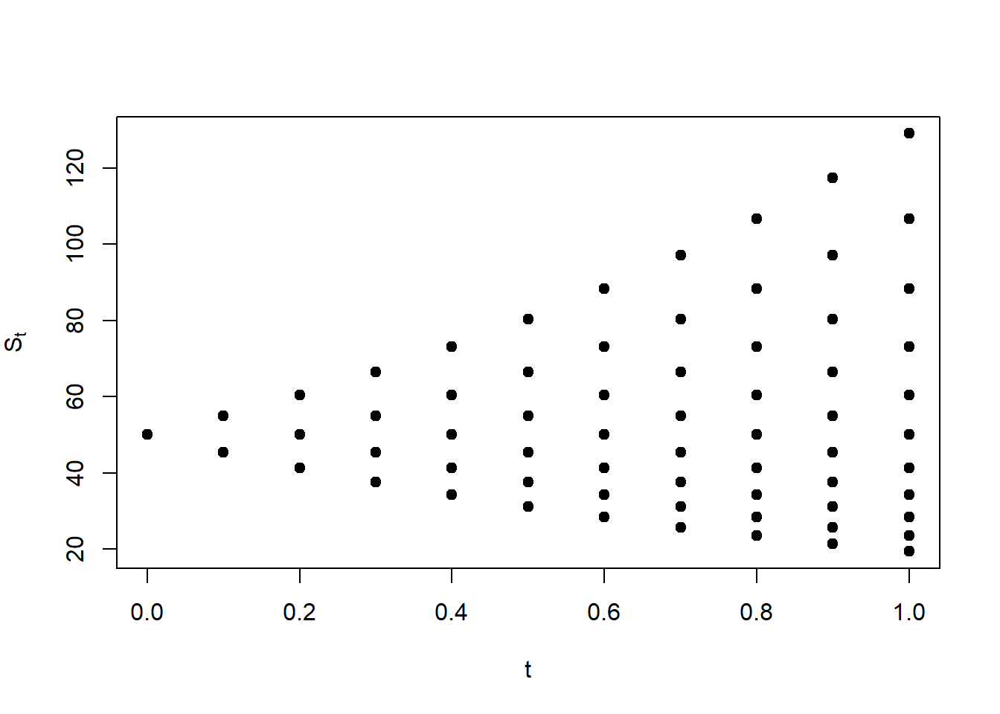
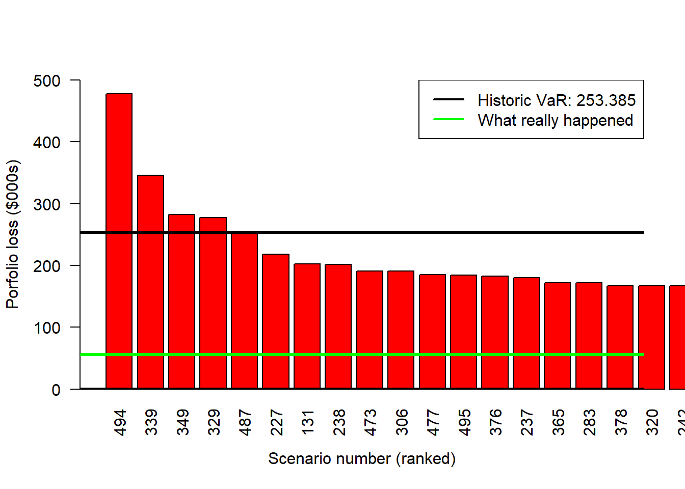

Options and VaR with R
Back to Quantitative Finance with


Introduction.
Option pricing and Value at Risk (VaR) play pivotal roles in risk management and quantitative finance, serving as indispensable tools for assessing and mitigating financial risks. Option pricing, exemplified by models like Black-Scholes, provides a systematic framework for valuing financial derivatives, enabling market participants to determine fair prices and make informed investment decisions. By understanding the potential future value of options, investors can hedge against adverse market movements and strategically allocate resources. On the other hand, VaR quantifies the potential loss that a portfolio may incur within a specified confidence interval and time horizon, offering a comprehensive measure of risk exposure. This metric assists financial institutions and investors in setting risk tolerance levels, optimizing portfolio diversification, and ensuring regulatory compliance. Together, option pricing and VaR contribute to the development of robust risk management strategies, enhancing the stability and resilience of financial markets in the face of uncertainties.
1 Payoff functions.
The payoff is the cash realized by the holder of an option or other asset at the end of its life.
1.1 European options.
It is often useful to characterize a European option in terms of its payoff to the purchaser of the option. The initial cost of the option is then not included in the calculation. The payoff functions for European options are the following.
- Payoff from a long position in a European call option: \(c^{+} = \mathrm{max}(S_T-K, 0)\). Or equivalently: \(c^{+}=-\mathrm{min}(K-S_T, 0)\).
- Payoff to the holder of a short position in the European call option: \(c^{-}=\mathrm{min}(K-S_T, 0)\). Or equivalently: \(c^{-}=-\mathrm{max}(S_T-K, 0)\).
- Payoff to the holder of a long position in a European put option: \(p^{+}=\mathrm{max}(K-S_T, 0)\). Or equivalently: \(p^{+}=-\mathrm{min}(S_T-K, 0)\).
- Payoff from a short position in a European put option: \(p^{-}=\mathrm{min}(S_T-K, 0)\). Or equivalently: \(p^{-}=-\mathrm{max}(K-S_T, 0)\).
Options are zero sum games because the payoffs to the holder or a long position and to the holder of a short position offset each other.
In the case of a call option:
\(c^{+}+c^{-}=\mathrm{max}(S_T-K, 0) + \mathrm{min}(K-S_T, 0)\),
\(\rightarrow c^{+}+c^{-}=\mathrm{max}(S_T-K, 0) - \mathrm{max}(S_T-K, 0)\),
\(\rightarrow c^{+}+c^{-}=0\).
In the case of a put option:
\(p^{+}+p^{-}=\mathrm{max}(K-S_T, 0) + \mathrm{min}(S_T-K, 0)\),
\(\rightarrow p^{+}+p^{-}=\mathrm{max}(K-S_T, 0) - \mathrm{max}(K-S_T, 0)\),
\(\rightarrow p^{+}+p^{-}=0\).
Graphically (assuming \(K=\$75\)):
Code
par(mfrow = c(2, 2), mai = c(0.7, 0.4, 0.4, 0.4))
par(pty = "s")
plot(ST.seq, cl, type = "l", ylim = c(0, 150), lwd = 4,
ylab = "Payoff", xlab = "")
legend("topleft", legend = c("Long call"),
bg = "white", bty = "n")
par(pty = "s")
plot(ST.seq, pl, type = "l", ylim = c(0, 150), lwd = 4,
ylab = "", xlab = "")
legend("topleft", legend = c("Long put"),
bg = "white", bty = "n")
par(pty = "s")
plot(ST.seq, cs, type = "l", ylim = c(-150, 0), lwd = 4,
ylab = "Payoff", xlab = expression(paste(S[T])))
legend("bottomleft", legend = c("Short call"),
bg = "white", bty = "n")
par(pty = "s")
plot(ST.seq, ps, type = "l", ylim = c(-150, 0), lwd = 4,
ylab = "", xlab = expression(paste(S[T])))
legend("bottomleft", legend = c("Short put"),
bg = "white", bty = "n")1.2 Stocks.
The payoff functions for stocks are the following.
Long position in a stock: \(S_T-S_0\).
Short position in a stock: \(S_0-S_T\).
Graphically:
Code
S0 = 75
par(pty = "s")
par(mfrow = c(1, 2), oma = c(0, 0, 2, 0))
par(pty = "s")
# Long position
plot(ST.seq, ST.seq-S0, type = "l", ylab = "Payoff", main = "Long stock",
xlab = expression(paste(S[T])), lwd = 4, col = "blue",
ylim = c(-75, 75))
abline(h = 0, lty = 2)
abline(v = 0, lty = 2)
par(pty = "s")
# Short position
plot(ST.seq, S0-ST.seq, type = "l", ylab = "", main = "Short stock",
xlab = expression(paste(S[T])), lwd = 4, col = "red",
ylim = c(-75, 75))
abline(h = 0, lty = 2)
abline(v = 0, lty = 2)1.3 Bonds.
The payoff functions for zero coupon bonds are the following.
Long position in a bond: \(K\).
Short position in a bond: \(-K\).
Graphically (assuming \(K=\$75\)):
Code
K = 75
par(pty = "s")
par(mfrow = c(1, 2), oma = c(0, 0, 2, 0))
par(pty = "s")
# Long position
plot(ST.seq, rep(K, 150), type = "l", ylab = "Payoff", main = "Long bond",
xlab = expression(paste(S[T])), lwd = 4, col = "blue",
ylim = c(0, 150))
abline(h = 0, lty = 2)
abline(v = 0, lty = 2)
par(pty = "s")
# Short position
plot(ST.seq, rep(-K, 150), type = "l", ylab = "", main = "Short bond",
xlab = expression(paste(S[T])), lwd = 4, col = "red",
ylim = c(-150, 0))
abline(h = 0, lty = 2)
abline(v = 0, lty = 2)1.4 Options, stocks and bonds.
We look at what can be achieved when an option is traded in conjunction with other assets. In particular, we examine the properties of portfolios consisting of (a) an option and a zero-coupon bond, (b) an option and the asset underlying the option, and (c) two or more options on the same asset. This section is based in Hull (2015) chapter 12, you can also see Brealey et al. (2020).
Code
S0 = 65
# Here I assume the stock price is currently 65.
Sl <- ST.seq - S0
# I assume the option price is 5.
cs.pr <- pmin(K - ST.seq, 0) + 5
# A short put profit is replicated by taking a short call and a long stock.
ans <- cs.pr + Sl
par(pty = "s")
plot(ST.seq, ans, type = "l", ylim = c(-75, 75), lwd = 2, col = "red",
xlab = expression(paste(S[T])),
ylab = "Profit")
lines(ST.seq, Sl, lty = 2, lwd = 2, col = "orange")
lines(ST.seq, cs.pr, lty = 2, lwd = 2, col = "blue")
abline(v = 0)
abline(h = 0)
abline(v = 65, lty = 2, col = "grey")
abline(v = 75, lty = 2, col = "grey")
abline(v = 80, lty = 2, col = "grey")
legend("topleft", legend = c("Short call", "Long stock", "Short put"),
col = c("blue", "orange", "red"), lty = c(2, 2, 1),
lwd = 2, bg = NULL)Code
S0 = 65
c_price = 5
# Here I assume the stock price is currently 65.
Sl <- ST.seq - S0
# I assume the option price is 5.
cs.pr <- pmin(K - ST.seq, 0) + c_price
# A short put profit is replicated by taking a short call and a long stock.
ans <- cs.pr + Sl
par(pty = "s")
plot(ST.seq, ans, type = "l", ylim = c(-5, 15), xlim = c(60, 80),
lwd = 4, col = "red",
xlab = expression(paste(S[T])),
ylab = "Profit")
lines(ST.seq, Sl, lwd = 4, col = "orange")
lines(ST.seq, cs.pr, lwd = 4, col = "blue")
abline(v = 0)
abline(h = 0)
abline(v = 65, lty = 2, col = "grey")
abline(v = 75, lty = 2, col = "grey")
abline(v = 80, lty = 2, col = "grey")
points(S0 - c_price, 0, cex = 3, col = "red", lwd = 3)
points(K, K - S0 + c_price, cex = 3, col = "red", lwd = 3, pch = 0)
points(K + c_price, 0, cex = 3, col = "blue", lwd = 3)
points(K, c_price, cex = 3, col = "blue", lwd = 3, pch = 0)
points(S0, 0, cex = 3, col = "orange", lwd = 3)
points(K, K - S0, cex = 3, col = "orange", lwd = 3, pch = 0)
points(K, 0, cex = 3, lwd = 3)We can identify at least three isosceles right triangles, they have two sides of equal measure. The short call profit is zero at \(S_T = \$80\), in the code above: K + c_price. The stock profit is zero at \(S_T=\$65\), in the coded above: S0. Finally, the short put profit is zero at \(S_T=\$60\), in the code above: S0 - c_price.
Now see how it looks if we plot a payoff diagram instead.
Code
S0 = K
Sl <- ST.seq - S0
cs.pr <- pmin(K - ST.seq, 0)
# A short put profit is replicated by taking a short call and a long stock.
ans <- cs.pr + Sl
par(pty = "s")
plot(ST.seq, ans, type = "l", ylim = c(-75, 75), lwd = 5, col = "red",
xlab = expression(paste(S[T])),
ylab = "Payoff")
lines(ST.seq, Sl, lty = 2, lwd = 2, col = "orange")
lines(ST.seq, cs.pr, lty = 2, lwd = 2, col = "blue")
abline(v = 0, lty = 2)
abline(h = 0, lty = 2)
legend("topleft", legend = c("Short call", "Long stock", "Short put"),
col = c("blue", "orange", "red"), lty = c(2, 2, 1),
lwd = 2, bg = "white")2 Options properties.
Financial options are one of the most flexible, popular and versatile financial instruments. They are relevant by themselves and important as building blocks to create other financial products and financial strategies. In order to fully understand options we need to understand their properties first. This is, what are the determinant of financial options, how these determinants change the option prices, what are the limits of financial options, what happens when these limits are violated, methods for determining the theoretical option prices and the relationship between call and put options. This section is based in Hull (2015) chapter 11.
2.1 Determinants.
The main determinants of option prices are those parameters of the Black-Scholes formula:
- The price of the underlying stock at time zero: \(S_0\).
- The option strike price: \(K\).
- The risk-free rate: \(rf\).
- The option maturity: \(T\).
- The volatility of the underlying stock \(\sigma\).
This is, \(BS = f(S_0, K, rf, T, \sigma)\). Here we set up the BS function and then evaluate it at \(BS = f(S_0=50, K=50, rf=0.05, T=1, \sigma=0.3)\).
Code
# Black-Scholes call.
c.bs <- function(S, K, rf, TT, sigma) {
d1 <- (log(S / K) + (rf + sigma^2 / 2) * TT) / (sigma * sqrt(TT))
d2 <- d1 - sigma * sqrt(TT)
c <- S * pnorm(d1) - K * exp(-rf * TT) * pnorm(d2)
}
# Black-Scholes put.
p.bs <- function(S, K, rf, TT, sigma) {
d1 <- (log(S / K) + (rf + sigma^2 / 2) * TT) / (sigma * sqrt(TT))
d2 <- d1 - sigma * sqrt(TT)
p <- K * exp(-rf * TT) * pnorm(-d2) - S * pnorm(-d1)
}
# Calculate and report results.
c <- c.bs(50, 50, 0.05, 1, 0.3)
p <- p.bs(50, 50, 0.05, 1, 0.3)
data.frame("Black-Scholes call" = c, "Black-Scholes put" = p) Black.Scholes.call Black.Scholes.put
1 7.115627 4.677099Now, let’s see how Black-Scholes option prices changes (call and put) when we leave \(S_0\) as a variable and the rest of the parameters as fixed: \(BS = f(S_0, K=50, rf=0.05, T=1, \sigma=0.3)\).
We produce as many c.S0 as values for S0.seq. Then, we can plot.
Code
The call option price is an increasing function of \(S_0\). This makes sense because a right to buy the stock at a fix price in the future becomes more valuable as the current value of the stock increases. In other words, it is more expensive to lock the price of an expensive asset for a potential buyer.
See the case of the put option.
Code
Here, it is cheaper to lock the price of an expensive asset for a potential seller. This makes sense because it looks unnecessary to lock the selling price of an expensive stock.
Let’s put both plots together.
Code
# What is the interpretation of S0.star, and how did I found this value?
S0.star <- K * exp(-rf * TT)
c.S0.star <- mapply(c.bs, S0.star, K, rf, TT, sigma)
# Plot.
plot(S0.seq, c.S0, type = "l", lwd = 4, col = "blue", ylim = c(4, 8),
xlab = expression(paste(S[0])), ylab = "Option theoretical price",
xlim = c(40, 55))
lines(S0.seq, p.S0, lwd = 4, col = "red")
abline(v = S0.star, lty = 2)
abline(h = c.S0.star, lty = 2)
abline(h = c, lty = 2, col = "blue")
abline(h = p, lty = 2, col = "red")
abline(v = S0, lty = 2)
points(S0, c, pch = 19, col = "blue", cex = 3)
points(S0, p, pch = 19, col = "red", cex = 3)
points(S0.star, c.S0.star, pch = 19, cex = 3)
legend("topleft", legend = c("Call", "Put"),
col = c("blue", "red"), lwd = 3, bg = "white")Note that there is a single case in which both options (call and put) are the same. It is interesting to find out the value of \(S_0\) that makes \(c=p\). Clearly, this value is lower than \(S_0=\$50\), the point here is to find the mathematical expression of \(S_0\) that makes \(c=p\).
2.2 Option bounds.
Option values (or prices) are subject or constrained to upper and lower bounds. This basically mean that in theory option prices cannot exceed upper bounds and cannot decrease below lower bounds. If they do, then arbitrage opportunities arise.
We can extend our analysis by incorporating the corresponding call and put option bounds.
Code
# Put lower bound.
lb.put <- pmax(K * exp(-rf * TT) - S0.seq, 0)
# Call lower bound.
lb.call <- pmax(S0.seq - K * exp(-rf * TT), 0)
# Again the S0.star. Where did this value comes from?
line.star <- S0.star * 2
# Plot.
par(pty = "s")
plot(S0.seq, c.S0, type = "l", lwd = 3, col = "blue", ylim = c(0, 100),
xlab = expression(paste(S[0])), ylab = "Call (blue), put (red)")
lines(S0.seq, p.S0, lwd = 3, col = "red")
abline(v = S0.star, lty = 2)
abline(v = 0, lty = 2)
abline(v = line.star, lty = 2, col = "green")
abline(h = line.star, lty = 2, col = "green")
# Put upper bound.
abline(h = K * exp(-rf * TT), lwd = 2, col = "red", lty = 2)
lines(S0.seq, lb.put, lwd = 2, col = "red", lty = 2)
# Call upper bound.
lines(S0.seq, S0.seq, lwd = 2, col = "blue", lty = 2)
lines(S0.seq, lb.call, lwd = 2, col = "blue", lty = 2)Note that the stock price range of values is from zero to positive infinity. However, this is not the case for the options. The option values depend on these bounds. We can illustrate the same plot in a cleaner way, to make emphasis on a geometric approach.
Code
par(pty = "s")
plot(S0.seq, lb.put, type = "l", lwd = 2, col = "red", ylim = c(0, 100),
xlab = expression(paste(S[0])), ylab = "Call (blue), put (red)")
abline(v = S0.star, lty = 2)
abline(v = 0, lty = 2)
abline(v = line.star, lty = 2)
abline(h = line.star, lty = 2)
abline(h = S0.star, lwd = 2, col = "red")
lines(S0.seq, S0.seq, lwd = 2, col = "blue")
lines(S0.seq, lb.call, lwd = 2, col = "blue")
# Enumerate the areas.
text(S0.star / 2, (S0.star + (S0.star / 2)), "1")
text(60, 80, "2")
text(80, 60, "3")
text(10, 20, "4")
text(25, 35, "5")
text(25, 10, "6")
text(40, 20, "7")
text(60, 35, "8")
text(80, 20, "9")Every number from 1 to 9 is assigned to a specific geometric shape in the plot above. This is, a square as in 1, and triangles of two different shapes in the rest of the cases (2 to 9). It is interesting to analyze whether each area represents a possible price range for call and/or put options.
Now, let’s see how Black-Scholes option prices changes (call and put) when we leave \(S_0\) as a variable, three levels of \(\sigma\) and the rest of the parameters as fixed: \(BS = f(S_0, K=50, rf=0.05, T=1, \sigma)\). We can show this in a 2 dimension plot, including the correspondent bounds.
Code
# Evaluate the function.
c.S0.s1 <- mapply(c.bs, S0.seq, K, rf, TT, sigma)
c.S0.s5 <- mapply(c.bs, S0.seq, K, rf, TT, sigma * 5)
c.S0.s15 <- mapply(c.bs, S0.seq, K, rf, TT, sigma * 15)
# Plot.
plot(S0.seq, c.S0.s1, type = "l", lwd = 3, xlab = expression(paste(S[0])),
ylab = "Call option price, c")
lines(S0.seq, c.S0.s5, lwd = 3, col = "blue") # call with higher sigma
lines(S0.seq, c.S0.s15, lwd = 3, col = "red") # call with even higher sigma
lines(S0.seq, lb.call, lwd = 3, lty = 2) # lower bound
lines(S0.seq, S0.seq, lwd = 3, lty = 2) # upper bound
legend("topleft",legend=expression(sigma == 0.3, sigma == 1.5,
sigma == 4.5, "call bounds"),
text.width = 12, col = c("black", "blue", "red", "black"), lwd = 2,
lty = c(1, 1, 1, 2), bg = "white", cex = 0.8)
And the same for the put option.
Code
# Evaluate the function.
p.S0.s1 <- mapply(p.bs, S0.seq, K, rf, TT, sigma)
p.S0.s5 <- mapply(p.bs, S0.seq, K, rf, TT, sigma * 5)
p.S0.s15 <- mapply(p.bs, S0.seq, K, rf, TT, sigma * 15)
# Plot.
plot(S0.seq, p.S0.s1, type = "l", lwd = 3, xlab = expression(paste(S[0])),
ylab = "Put option price, p")
lines(S0.seq, p.S0.s5, lwd = 3, col = "blue") # put with higher sigma
lines(S0.seq, p.S0.s15, lwd = 3, col = "red") # put with even higher sigma
lines(S0.seq, lb.put, lwd = 3, lty = 2) # lower bound
lines(S0.seq, rep(S0.star, 50) , lwd = 3, lty = 2) # upper bound
legend("bottomleft", legend = expression(sigma == 0.3, sigma == 1.5,
sigma == 4.5, "put bounds"),
text.width = 12, col = c("black", "blue", "red", "black"), lwd = 2,
lty = c(1, 1, 1, 2), bg = "white", cex = 0.8)Code
# Evaluate the function.
p.S0.s1 <- mapply(p.bs, S0.seq, K, rf, TT, sigma)
p.S0.s5 <- mapply(p.bs, S0.seq, K, rf, TT, sigma * 5)
p.S0.s15 <- mapply(p.bs, S0.seq, K, rf, TT, sigma * 15)
# Plot.
plot(S0.seq, p.S0.s5, type = "l", lwd = 3, xlab = expression(paste(S[0])),
ylab = "Put option price, p", col = "blue",
xlim = c(0, 1), ylim = c(47, 47.8))
lines(S0.seq, p.S0.s15, lwd = 3, col = "red") # put with even higher sigma
lines(S0.seq, lb.put, lwd = 1, lty = 2) # lower bound
lines(S0.seq, rep(S0.star, 50) , lwd = 1, lty = 2) # upper bound
legend("topleft", legend = expression(sigma == 1.5,
sigma == 4.5, "put bounds"),
text.width = 12, col = c("blue", "red", "black"), lwd = 2,
lty = c(1, 1, 2), bg = "transparent", cex = 0.8, bty = "n")Then, regardless of the extreme value of parameters, option bounds represent the maximum and minimum values for the call and put options. These option prices are theoretical as they are calculated by implementing the Black-Scholes formula. We normally evaluate whether the option market prices violates these bounds because this will flag an opportunity to implement an arbitrage strategy to generate a risk-free profit.
A different way to illustrate the option properties is by looking at a plane. Here, we let \(S_0\) and \(K\) as a free variables and remain the rest as fixed: \(BS = f(S_0, K, rf=0.05, T=1, \sigma = 0.3)\).
Code
# K as a variable.
K.seq <- S0.seq
# Create the empty matrix.
c.S0.s <- matrix(0, nrow = 50, ncol = 50)
# Fill the empty matrix.
for(i in 1:50){ # Is there an easier way to do this?
for(j in 1:50){
c.S0.s[i, j] <- c.bs(S0.seq[i], K.seq[j], rf, TT, sigma) } }
# Plot.
c.S0.s.plot <- persp(S0.seq, K.seq, c.S0.s, zlab = "Call",
xlab = "S_0",
ylab = "K", theta = -60, phi = 10, expand = 0.5, col = "orange",
shade = 0.2, ticktype = "detailed")
points(trans3d(S0, K, c, c.S0.s.plot), cex = 2, pch = 19, col = "blue")An alternative view is by showing a contour plot. A contour plot is a graphical technique for representing a 3-dimensional surface by plotting constant \(z\) slices (option prices), called contours, on a 2-dimensional format. That is, given a value for \(z\), lines are drawn for connecting the \((x, y)\) coordinates (\(S_0\), \(K\)) where that \(z\) value occurs.
Code
Note that the blue circle \(S_0=\$50, K=\$50\) is between the contour line 5 and 10, this makes sense because the call option at \(call(S_0=50, K=50, rf=0.05, T=1, \sigma = 0.3) = \$7.115627\).
Code
An interesting case is the value of the put as a function of the time to maturity. Let’s see the simplest case.
Code
The put option price first increases as the time to maturity increases and after reaching a maximum, the put option price decreases. What is the mathematical expression for the time to maturity which makes the put option price maximum? What is the reason or logic behind this mysterious hump? Those are interesting questions to address.
Code
p1.bs <- function(S, K, rf, TT, sigma) {
d1 <- (log(S / K) + (rf + sigma^2 / 2) * TT) / (sigma * sqrt(TT))
d2 <- d1 - sigma * sqrt(TT)
p1 <- K * exp(-rf * TT) * pnorm(-d2)
}
p2.bs <- function(S, K, rf, TT, sigma) {
d1 <- (log(S / K) + (rf + sigma^2 / 2) * TT) / (sigma * sqrt(TT))
d2 <- d1 - sigma * sqrt(TT)
p2 <- S * pnorm(-d1)
}
TT.seq <- seq(from = 1, to = 25, length.out = 50)
p1.TT <- mapply(p1.bs, S0, K, rf, TT.seq, sigma)
p2.TT <- mapply(p2.bs, S0, K, rf, TT.seq, sigma)
plot(TT.seq, p.TT, type = "l", lwd = 4, ylab = "Put value", xlab = "T",
ylim = c(-20, 25))
lines(TT.seq, p1.TT, col = "blue")
lines(TT.seq, p2.TT, col = "red")
points(TT, p, col = "red", cex = 2, pch = 19)Let’s illustrate the case when time to maturity and the stock price at time zero changes.
Code
p.S0.T <- matrix(0, nrow = 50, ncol = 50)
for(i in 1:50) { # Is there an easier way to do this?
for(j in 1:50) {
p.S0.T[i, j] <- p.bs(S0.seq[i], K, rf, TT.seq[j], sigma) } }
p.S0.T.plot <- persp(S0.seq, TT.seq, p.S0.T, zlab = "Put", xlab = "S0",
ylab = "T", theta = 330, phi = 10, expand = 0.5,
col = "orange", shade = 0.2, ticktype = "detailed")
points(trans3d(S0, TT, p, p.S0.T.plot), cex = 2, pch = 19, col = "blue")That is not quite clear. So, here is the contour view.
Code
Now the mysterious hump is clearer than before. Remember the value of \(put(S_0=50, K=50, rf=0.05, T=1, \sigma = 0.3) = \$4.677099\).
2.3 Put-call parity.
The main idea behind the put-call parity is to understand how call and put option prices are related as today, at \(t=0\). In Hull, the procedure to derive the put-call parity starts with the definition of two portfolios: (1) a call and a bond; (2) a put and a stock. Then, derive the corresponding payoff of each portfolio at maturity. Doing this is relatively easy because we do not need a valuation method as we know the payoff functions for options, bonds and stocks. Given that we can demonstrate that the value of two different portfolios are the same at \(T\), then we can conclude that these two portfolios are worth the same at \(t=0\) as well.
The put-call parity is: \(c+Ke^{-rT}=p+S_0\).
We can verify that this equation holds.
\(p=c+Ke^{-rT}-S_0 \rightarrow p=7.115627+50e^{-0.05\times 1}- 50 \rightarrow p=\$4.677098\).
\(c=p+S_0-Ke^{-rT} \rightarrow c=4.677098+50-50e^{-0.05\times 1} \rightarrow c=\$7.115627\).
Let’s take one step back and demonstrate that both portfolios are worth the same at maturity. We first define the assets payoffs.
Then we plot.
Code
par(pty = "s")
par(mfrow = c(1, 2), oma = c(0, 0, 2, 0))
par(pty = "s")
# Portfolio A.
plot(ST.seq, cT, type = "l", ylab = "Payoff",
xlab = expression(paste(S[T])), lwd = 2,
lty = 2, col = "blue", ylim = c(0, 150))
lines(ST.seq, (cT + BT), lwd = 6)
lines(ST.seq, BT, lwd = 2, lty = 2, col = "red")
legend("topleft", legend = c("Call option", "Zero coupon bond",
"Total (Portfolio A)"),
col = c("blue", "red", "black"), lwd = c(2, 2, 2), lty = c(2, 2, 1),
bg = "white", cex = 0.7)
par(pty = "s")
# Portfolio C.
plot(ST.seq, (pT + ST.seq), lwd = 6, type = "l", ylab = "",
xlab = expression(paste(S[T])), ylim = c(0, 150))
lines(ST.seq, ST.seq, lwd = 2, lty = 2, col = "orange")
lines(ST.seq, pT, lwd = 2, lty = 2, col = "purple")
legend("topleft", legend = c("Put option", "Share", "Total (Portfolio C)"),
col = c("purple", "orange", "black"), lwd = 2,
lty = c(2, 2, 1), bg = "white", cex = 0.7)The point here is that the black line (total) is the same in both cases. This is why we argue that the payoffs of both portfolios are worth the same. If this is so, then they are worth the same in time \(t=0\).
In sum, this is the payoff of portfolios A and C: \(\mathrm{max}(S_T,K)\). This is already stored in pc.
Code
Nice. We can manipulate the put-call parity to create a synthetic stock \(S_0\). This is:
\(c+Ke^{-rT}=p+S_0 \rightarrow S_0 = c+Ke^{-rT}-p\).
Graphically:
Code
par(pty = "s")
plot(ST.seq, (cT + BT - pT), type = "l", ylab = "Payoff",
xlab = expression(paste(S[T])),
lwd = 5, ylim = c(-50, 100), xlim = c(0, 150), col = "orange")
lines(ST.seq, cT, lwd = 2, lty = 2, col = "blue") # positive call.
lines(ST.seq, BT, lwd = 2, lty = 2, col = "red") # positive bond.
lines(ST.seq, -pT, lwd = 2, lty = 2, col = "purple") # negative put.
legend("bottomright", legend = c("Call option", "Zero coupon bond",
"Put option", "Total (stock)"),
col = c("blue", "red", "purple", "orange"), lwd = 2,
lty = c(2, 2, 2, 1), bg = "white", cex = 0.8)So, we created a stock that did not exist with a call, a bond and a put. We can manipulate the put-call parity to create a synthetic bond \(Ke^{-rT}\). This is:
\(c+Ke^{-rT}=p+S_0 \rightarrow Ke^{-rT} = p+S_0-c\).
Graphically:
Code
par(pty = "s")
plot(ST.seq, (-cT + ST.seq + pT), type = "l", ylab = "Payoff",
xlab = expression(paste(S[T])),
lwd = 5, ylim = c(-50, 100), xlim = c(0, 150), col = "orange")
lines(ST.seq, -cT, lwd = 2, lty = 2, col = "blue")
lines(ST.seq, ST.seq, lwd = 2, lty = 2, col = "red")
lines(ST.seq, pT, lwd = 2, lty = 2, col = "purple")
legend("bottomleft", legend = c("Call option (short)", "Stock",
"Put option", "Total (bond)"),
col = c("blue", "red", "purple", "orange"), lwd = 2,
lty = c(2, 2, 2, 1), bg = "white", cex = 0.7)There is an alternative to the Black-Scholes formula we indirectly review before. Next section introduces the binomial trees.
3 Binomial trees.
Binomial trees are a flexible valuation method for options because we can use them to value not only European but also American options. This section is based in Hull (2015) chapter 13.
3.1 Implementation.
The function is the following.
Code
bin <- function(S0, K, sigma, TM, r, steps) {
# the parameters
dt <- TM / steps
u <- exp(sigma * sqrt(dt))
d <- exp(-sigma * sqrt(dt))
a <- exp(r * dt)
p <- (a - d) / (u - d)
S <- matrix(0, steps + 1, steps)
pam <- S
peu <- S
cam <- S
ceu <- S
# the stock price process
for(i in 1:steps) {
j <- i + 1
do <- seq(0, i)
up <- rev(do)
S[(1:j), i] <- S0 * (u ^ up) * (d ^ do) }
# the option prices at maturity.
peu[(1:(steps + 1)), steps] <- pmax(K - S[, i], 0)
pam[(1:(steps + 1)), steps] <- pmax(K - S[, i], 0)
ceu[(1:(steps + 1)), steps] <- pmax(S[, i] - K, 0)
cam[(1:(steps + 1)), steps] <- pmax(S[, i] - K, 0)
# the binomial method to price stock options.
for(j in steps:1) { # this is a reverse loop from steps to 1.
cd <- (seq(steps:1)) # every round we compute less option prices.
for(i in 1:cd[j]) { # option prices per step.
peu[i, (j - 1)] <- exp(-r * dt) * (p * peu[i, j] +
(1 - p) * peu[(i + 1), j])
ceu[i, (j - 1)] <- exp(-r * dt) * (p * ceu[i, j] +
(1 - p) * ceu[(i + 1), j])
pam[i, (j - 1)] <- max((K - S[i, (j - 1)]), exp(-r * dt) *
(p * pam[i, j] + (1 - p) * pam[(i + 1), j]))
cam[i, (j - 1)] <- max((S[i, (j - 1)] - K), exp(-r * dt) *
(p * cam[i, j] + (1 - p) * cam[(i + 1), j])) } }
# This is the final step in the binomial tree.
p.eu <- exp(-r * dt) * (p * peu[1, 1] + (1 - p) * peu[2, 1])
c.eu <- exp(-r * dt) * (p * ceu[1, 1] + (1 - p) * ceu[2, 1])
p.am <- exp(-r * dt) * (p * pam[1, 1] + (1 - p) * pam[2, 1])
c.am <- exp(-r * dt) * (p * cam[1, 1] + (1 - p) * cam[2, 1])
# Results.
option <- data.frame(c.eu, p.eu, c.am, p.am)
option
}We can evaluate the function above to see how the price change depending on the number of steps in the binomial tree. Let’s evaluate the bin() function assuming \(S_0=\$50\), \(K=\$50\), \(rf=0.05\), \(T=1\), and \(\sigma=0.3\) at different time steps.
See the results.
Code
Black.Scholes <- data.frame(c.eu = c, p.eu = p, c.am = NA, p.am = NA)
bin.bs <- rbind("Binomial (1 step)" = b1t, "Binomial (4 steps)" = b4t,
"Binomial (20 steps)" = b20t, "Binomial (50 steps)" = b50t,
"Binomial (200 steps)" = b200t,
"Binomial (500 steps)" = b500t,
"Black-Scholes" = Black.Scholes)
bin.bs c.eu p.eu c.am p.am
Binomial (1 step) 8.481986 6.043457 8.481986 6.043457
Binomial (4 steps) 6.762001 4.323472 6.762001 4.767526
Binomial (20 steps) 7.042462 4.603934 7.042462 4.898985
Binomial (50 steps) 7.086241 4.647713 7.086241 4.921038
Binomial (200 steps) 7.108267 4.669738 7.108267 4.931581
Binomial (500 steps) 7.112682 4.674153 7.112682 4.933664
Black-Scholes 7.115627 4.677099 NA NAIn the extreme, as the number of steps increases, the binomial method converges to the Black-Scholes method. Let’s explore these differences.
Here, we compare the value of the binomial method and the Black-Scholes at different time steps as a function of \(S_0\).
Code
There are some differences between the binomial and the Black-Scholes. Let’s zoom to see the differences clearer.
Code
plot(S0.seq, b1[1,], type = "l", ylim = c(0, 4), xlim = c(30, 45),
col = "green", lwd = 2, xlab = expression(paste(S[0])),
ylab = "European call")
lines(S0.seq, b2[1,], col = "purple", lwd = 2)
lines(S0.seq, b3[1,], col = "orange", lwd = 2)
lines(S0.seq, b4[1,], col = "red", lwd = 2)
lines(S0.seq, b20[1,], col = "black", lwd = 2)
lines(S0.seq, c.S0.s1, col = "black", lwd = 2)
legend("topleft", legend = c("1 step binomial", "2 steps binomial",
"3 steps binomial", "4 steps binomial",
"20 steps binomial", "Black-Scholes"),
col = c("green", "purple", "orange", "red", "black", "black"),
lwd = 2, bg = "white")
Not clear yet. Let’s see a panel view.
Code
par(mfrow = c(2, 2), mai = c(0.7, 0.4, 0.4, 0.4))
par(pty = "s")
plot(S0.seq, c.S0.s1, type = "l", ylim = c(0, 4), xlim = c(30, 45),
col = "black", lwd = 6, xlab = "", ylab = "European call")
lines(S0.seq, b2[1,], col = "purple", lwd = 2)
legend("topleft", legend = c("2-steps"),
bg = "white", bty = "n")
par(pty = "s")
plot(S0.seq, c.S0.s1, type = "l", ylim = c(0, 4), xlim = c(30, 45),
col = "black", lwd = 6, xlab = "", ylab = "")
lines(S0.seq, b3[1,], col = "orange", lwd = 2)
legend("topleft", legend = c("3-steps"),
bg = "white", bty = "n")
par(pty = "s")
plot(S0.seq, c.S0.s1, type = "l", ylim = c(0, 4), xlim = c(30, 45),
col = "black", lwd = 6, xlab = expression(paste(S[0])),
ylab = "European call")
lines(S0.seq, b4[1,], col = "red", lwd = 2)
legend("topleft", legend = c("4-steps"), bg = "white", bty = "n")
par(pty = "s")
plot(S0.seq, c.S0.s1, type = "l", ylim = c(0, 4), xlim = c(30, 45),
col = "black", lwd = 6, xlab = expression(paste(S[0])), ylab = "")
lines(S0.seq, b20[1,], col = "grey", lwd = 2)
legend("topleft", legend = c("20-steps"),
bg = "white", bty = "n")As stated above, the binomial method converges to the Black-Scholes as time steps increase. We can also create a function to visualize the price path of the stock from \(S_0\) to \(S_T\) given the assumptions of the binomial method.
3.2 Stock price paths.
In order to value option prices, we first need to understand the evolution of the underlying (in this case the stock price) from time zero to maturity, this is from \(S_0\) to \(S_T\). The binomial method assumes that the price can increase or decrease with a certain probability in each time step. Here, we can show how the binomial tree method assumes this stock price evolution.
Let’s assume 10-steps, from \(t=0.1, t=0.2,..., t=1\)
Code
# Function to generate stock prices paths given the binomial method.
S.paths <- function(S0, sigma, TM, steps) {
dt <- TM / steps
u <- exp(sigma * dt^0.5) # Here we set u and d as a function of sigma.
d <- exp(-sigma * dt^0.5)
S <- matrix(0, (steps + 1), (steps + 1))
S[1, 1] <- S0
for(i in 2:(steps + 1)) {
do = seq(0, i - 1)
up = rev(do) # rev provides a reversed version of its argument.
S[(1:i), i] = S0 * (u ^ up) * (d ^ do) }
S }
# Evaluate the function.
Spaths <- S.paths(50, 0.3, 1, 10)
# A table.
colnames(Spaths) <- c(0, cumsum(rep(1/10, 10)))
round(Spaths, 2) 0 0.1 0.2 0.3 0.4 0.5 0.6 0.7 0.8 0.9 1
[1,] 50 54.98 60.45 66.46 73.08 80.35 88.34 97.13 106.80 117.43 129.12
[2,] 0 45.47 50.00 54.98 60.45 66.46 73.08 80.35 88.34 97.13 106.80
[3,] 0 0.00 41.36 45.47 50.00 54.98 60.45 66.46 73.08 80.35 88.34
[4,] 0 0.00 0.00 37.62 41.36 45.47 50.00 54.98 60.45 66.46 73.08
[5,] 0 0.00 0.00 0.00 34.21 37.62 41.36 45.47 50.00 54.98 60.45
[6,] 0 0.00 0.00 0.00 0.00 31.11 34.21 37.62 41.36 45.47 50.00
[7,] 0 0.00 0.00 0.00 0.00 0.00 28.30 31.11 34.21 37.62 41.36
[8,] 0 0.00 0.00 0.00 0.00 0.00 0.00 25.74 28.30 31.11 34.21
[9,] 0 0.00 0.00 0.00 0.00 0.00 0.00 0.00 23.41 25.74 28.30
[10,] 0 0.00 0.00 0.00 0.00 0.00 0.00 0.00 0.00 21.29 23.41
[11,] 0 0.00 0.00 0.00 0.00 0.00 0.00 0.00 0.00 0.00 19.36This does not look like a typical binomial tree. In fact, it is not very clear whether a given price corresponds to an increase or decrease from a previous time step. We can make a few arrangements to visualize this as a tree.
Code
S.paths <- function(S0, sigma, TM, steps) {
dt <- TM / steps
u <- exp(sigma * dt^0.5)
d <- exp(-sigma * dt^0.5)
S <- matrix(0, 2 * ((steps + 1)), (steps + 1))
S2 <- matrix(NA, ((2 * steps) + 2), (steps + 1))
S2[(steps + 1), 1] <- S0
for(i in 2:(steps + 1)) {
do = seq(0, i - 1)
up = rev(do) # rev provides a reversed version of its argument.
S[(1:i), i] = S0 * (u ^ up) * (d ^ do)
x = rep(NA, i) # These are the NA between stock prices.
r = rev(c(seq(0, (steps - 1)), 0)) # These creates the blank spaces.
# Here we combine NA and stock prices for each column.
S2[(1 + r[i]):((2 * i) + r[i]), i] = as.numeric(rbind(S[(1:i), i], x))
}
S2 }
# Evaluate the function.
Spaths <- S.paths(50, 0.3, 1, 10)
# A table.
colnames(Spaths) <- round(c(0, cumsum(rep(1/10, 10))), 2)
round(Spaths, 2) 0 0.1 0.2 0.3 0.4 0.5 0.6 0.7 0.8 0.9 1
[1,] NA NA NA NA NA NA NA NA NA NA 129.12
[2,] NA NA NA NA NA NA NA NA NA 117.43 NA
[3,] NA NA NA NA NA NA NA NA 106.80 NA 106.80
[4,] NA NA NA NA NA NA NA 97.13 NA 97.13 NA
[5,] NA NA NA NA NA NA 88.34 NA 88.34 NA 88.34
[6,] NA NA NA NA NA 80.35 NA 80.35 NA 80.35 NA
[7,] NA NA NA NA 73.08 NA 73.08 NA 73.08 NA 73.08
[8,] NA NA NA 66.46 NA 66.46 NA 66.46 NA 66.46 NA
[9,] NA NA 60.45 NA 60.45 NA 60.45 NA 60.45 NA 60.45
[10,] NA 54.98 NA 54.98 NA 54.98 NA 54.98 NA 54.98 NA
[11,] 50 NA 50.00 NA 50.00 NA 50.00 NA 50.00 NA 50.00
[12,] NA 45.47 NA 45.47 NA 45.47 NA 45.47 NA 45.47 NA
[13,] NA NA 41.36 NA 41.36 NA 41.36 NA 41.36 NA 41.36
[14,] NA NA NA 37.62 NA 37.62 NA 37.62 NA 37.62 NA
[15,] NA NA NA NA 34.21 NA 34.21 NA 34.21 NA 34.21
[16,] NA NA NA NA NA 31.11 NA 31.11 NA 31.11 NA
[17,] NA NA NA NA NA NA 28.30 NA 28.30 NA 28.30
[18,] NA NA NA NA NA NA NA 25.74 NA 25.74 NA
[19,] NA NA NA NA NA NA NA NA 23.41 NA 23.41
[20,] NA NA NA NA NA NA NA NA NA 21.29 NA
[21,] NA NA NA NA NA NA NA NA NA NA 19.36
[22,] NA NA NA NA NA NA NA NA NA NA NAGraphically:
Code

Nice. Evaluate the function for a single 2-step case: \(S_0=\$50\), \(K=\$52\), \(\sigma = 0.3\), \(T=2\), \(rf=0.05\).
[,1]
c.eu 9.194163
p.eu 6.245708
c.am 9.194163
p.am 7.428402There is no difference between American and European call options theoretical prices as there are no incentives to exercise American call options early. The case of put options is different as incentives to exercise American put options early may arise. As a consequence, American put options are in general more expensive than European put options.
Let’s evaluate this difference in a 50-step case: \(K=\$52\), \(\sigma = 0.3\), \(T=2\), \(rf=0.05\), and different values of \(S_0\).
Code
S.seq <- seq(0, 80, 0.5)
AEoptions <- mapply(bin, S.seq, 52, 0.3, 1, 0.05, 50)
plot(S.seq, unlist(AEoptions[4,]) - unlist(AEoptions[2,]),
type = "l", lwd = 5, main = "The value of being American.",
xlab = expression(paste(S[0])),
ylab = "American minus European put")
abline(v = 52, lty = 2)
abline(h = 0, lty = 2)3.3 Real vs. risk-neutral world.
This section is based on Hull (2015) section 13.1. A stock price is currently $20, and it is known that at the end of 3 months it will be either $22 or $18. We are interested in valuing a European call option to buy the stock for $21 in 3 months. The risk-neutral probability \(p\) for the case of \(rf=0.12\), \(T=3/12\), \(u=1.1\) and \(d=0.9\):
\(p = \frac{e^{rT}-d}{u-d} \rightarrow p = \frac{e^{0.12\times(3/12)}-0.9}{1.1-0.9} \rightarrow p = \$0.6522727\).
[1] 0.6522727Following Hull (2015), this option will have one of two values at the end of the 3 months. If the stock price turns out to be $22, the value of the option will be $1; if the stock price turns out to be $18, the value of the option will be zero. This is the European call option expected value at time \(T\):
\([p\times(\$1)] + [(1-p)\times \$0]\)
\(\rightarrow [0.6522727\times(\$1)] + [(1-0.6522727)\times \$0] = \$0.6522727\).
We can calculate the European call option value at \(t=0\) according to the risk-neutral valuation. This option value \(f\) is valid in the real world, not only in the risk-neutral world.
\(f = \$0.6522727 \times e^{-rT} \rightarrow f = \$0.6522727 \times e^{-0.12\times3/12} \rightarrow f = \$0.6329951\).
Suppose that, in the real world, we know the expected return on the stock is 16%. This is easily calculated as we have historical information of stock returns. It is also a reasonable assumption as this is higher than the risk-free rate. Then, the probability of an up movement in the real world \(p^*\) is:
\(p^* = \frac{e^{rT}-d}{u-d} \rightarrow p^* = \frac{e^{0.16\times(3/12)}-0.9}{1.1-0.9} \rightarrow p^* = 0.7040539\).
This is the option expected value in the real world at time \(T\):
\([p^*\times(\$1)] + [(1-p^*)\times \$0]\)
\(\rightarrow 0.7040539\times(\$1) + (1-0.7040539)\times \$0 = \$0.7040539\).
Can we calculate the present value of $0.7040539? We only need the option discount factor in the real world. The problem is that we do not know this rate, it should be higher than the risk-free rate, even higher than the the expected return on the stock. It is not easy to know the correct discount rate of the option to apply to the expected payoff in the real world. Using risk-neutral valuation solves this problem because we know that in a risk-neutral world the expected return on all assets (and therefore the discount rate to use for all expected payoffs) is the risk-free rate.
What can we do to find out the option discount factor? Since we know the correct value of the option is \(f=\$0.6329951\) in both real and risk-neutral world, we can deduce the real-world discount rate \(r\) of this European call option.
We know this is true: \(\$0.6329951 = \$0.704053e^{-r\times3/12}\).
Then, solve for \(r\): \(\rightarrow \frac{\$0.6329951}{\$0.704053} = e^{-r\times3/12}\),
\(\rightarrow log{\frac{\$0.6329951}{\$0.704053}} = -r\times3/12\),
\(\rightarrow r = -log{\frac{\$0.6329951}{\$0.704053}}\times12/3\),
\(\rightarrow r=0.4255688\).
The implied real-world discount rate for the option is 42.55688%. Let’s put everything in a function.
Evaluate for known values:
Everything looks correct.
Code
# Evaluate the function in a range of values.
r.seq <- seq(0.11, 0.17, 0.001)
df <- mapply(option.df.fun, r.seq)
plot(r.seq, df, type = "l", lwd = 5,
xlab = "Expected return of the stock (the underlying)",
ylab = "Expected return of the option")
points(0.12, 0.12, pch = 19, col = "blue", cex = 3)
points(0.16, 0.4255688, pch = 19, col = "red", cex = 3)
abline(v = 0.12, lty = 2, col = "blue", lwd = 2)
abline(h = option.df.fun(0.12), lty = 2, col = "blue", lwd = 2)
abline(v = 0.16, lty = 2, col = "red", lwd = 2)
abline(h = option.df.fun(0.16), lty = 2, col = "red", lwd = 2)As in the movie, The Matrix, the blue pill describes living life without knowing its meaning or running away from the truth in order to stay as is. This is equivalent to the risk-neutral world. The red pill is described as the solution for knowing the real truth in life. This is equivalent to the real-world.
3.4 Parrondo’s paradox.
The Parrondo’s paradox is controversial in the literature, we are not going to elaborate on that. However, it is indeed interesting as it looks counterintuitive: Can we combine two losing investments into a winner?
This video was created by Professor Humberto Barreto from DePauw University, Indiana, based on a now-defunct app from Alexander Bogomolny of the well-known maths site Cut the Knot. It illustrates the general idea of Parrondo’s paradox.
Consider asset A which has a known 6% gross return. In the context of a binomial tree: \([p\times(1+u)]+[(1-p)\times(1-d)]=1.06\). Let’s assume \(p=0.5\), so we have:
\(0.5(1+u)+0.5(1-d)=1.06\).
Asset A has a known 40% volatility, so:
\(0.4=\sqrt{0.5(1+u)^2+0.5(1-d)^2-1.06^2}\).
We have two equations and two unknown variables, so we can solve for \((1+u)\) and \((1-d)\): \((1+u)=1.46\) and \((1-d)=0.66\). In a period of 5 years, we would have a random path of ups (1.46) and downs (0.66) for asset A.
Code
[1] 1.46 0.66 0.66 1.46 0.66Graphically:
Code
The evolution of $1 dollar invested in this 5 year period would look like this:
Graphically:
Code
Even simpler and quicker, a \(\$1\) dollar invested at \(t=0\) would lead to \(\$0.6128265\) at \(t=5\).
Let’s use a function now.
See if it works. Calculate the asset A cumulative return of a 5-year and 30-year investment.
[1] 0.6128265[1] 2.805884It works, a \(\$1\) dollar invested at \(t=0\) would lead to \(\$0.6128265\) in 5 years as we show before. And now we know that a \(\$1\) dollar invested at \(t=0\) would lead \(\$2.805884\) in 30 years. Let’s view the 30 year case:
Code
u = 0.46
d = 0.34
n = 30
set.seed(2, sample.kind = "Rounding")
a.30 <- c(1, cumprod(sample(c(1+u, 1-d), n, replace = TRUE)))
a.30 <- as.data.frame(cbind(year = c(0:30), ret = a.30))
ggplot(a.30, aes(x = year, y = ret)) +
geom_line(size = 1) +
geom_point(aes(x = 5, y = 0.6128265), size = 6) +
labs(y = "Cumulative return", x = "Year",
subtitle = "Evolution of $1 invested in year 0.") +
scale_y_continuous(labels = scales::dollar)These results represent one single path. So, if we are interested in the most likely value of our investment we need to simulate many paths and then estimate the median. Let’s simulate 10,000 paths and see the most likely value of our \(\$1\) dollar investment in 30 years.
See the results.
Code
a.30x10k |>
ggplot(aes(x = year, y = c.ret, color = name)) +
geom_line(size = 1) +
geom_point(aes(x = 0, y = 1), col = "black", size = 4) +
theme(legend.position = "none", legend.title = element_blank()) +
labs(y = "Cumulative return", x = "Year",
subtitle = "10,000 paths of the evolution of $1 invested in year 0.") +
scale_y_continuous(labels = scales::dollar)Most of these paths are concentrated in low cumulative returns by the end of the 30 years. In fact, 1,586 paths end up with a cumulative return lower than $1 by the end of the 30 years:
Code
[1] 1586Let’s plot these 1,586 paths.
Code
a.30x10k |>
group_by(name) |>
filter(c.ret < 1) |>
filter(length(year) == 30) |>
ggplot(aes(x = year, y = c.ret, color = name)) +
geom_line(size = 1) +
geom_point(aes(x = 0, y = 1), col = "black", size = 4) +
theme(legend.position = "none", legend.title = element_blank()) +
labs(y = "Cumulative return", x = "Year",
subtitle = "1,586 paths of the evolution of $1 invested in year 0.") +
scale_y_continuous(labels = scales::dollar)The figure above looks still unclear as the concentration around $0 is still high. It is better to show the results in logarithm form.
Code
a.30x10k |>
group_by(name) |>
filter(c.ret < 1) |>
filter(length(year) == 30) |>
ggplot(aes(x = year, y = log(c.ret), color = name)) +
geom_line(size = 1) +
geom_point(col = "black", alpha = 0.01, size = 4) +
geom_point(aes(x = 0, y = log(1)), col = "black", size = 4) +
theme(legend.position = "none",
legend.title = element_blank()) +
labs(y = "Log cumulative return", x = "Year",
subtitle = "Losing paths.")The figure now resembles a binomial tree. The black circles are more transparent for less concentrated values and less transparent for more concentrated values.
Let’s do a similar plot for all the 10,000 paths.
Code
a.30x10k |>
ggplot(aes(x = year, y = log(c.ret), color = name)) +
geom_line(size = 1) +
geom_point(aes(x = 0, y = log(1)), size = 3, col = "black") +
geom_point(col = "black", alpha = 0.01, size = 3) +
theme(legend.position = "none", legend.title = element_blank()) +
labs(y = "Log cumulative returns", x = "Year",
subtitle = "10,000 paths of the evolution of $1 invested in year 0.")Here it is easier to see that the paths actually follow a binomial structure. Now, let’s see the summary statistics for the 10,000 possible investment value at year 30.
Code
Min. 1st Qu. Median Mean 3rd Qu. Max.
0.000 0.117 0.573 5.816 2.806 3559.180 Not good news as our 30 year investment of \(\$1\) in this asset A with 6% gross return and 40% volatility leads to \(\$0.5733923\). Even if we drop the set.seed(), we end with the same result.
It would be a mistake to consider the mean $5.816 as the estimated value of our investment in asset A since the maximum value is very high and not likely to happen. Note that the mean is very close to \((\$1+0.06)^{30}=\$5.743491\).
The asset A is then a loosing investment, \(\$1\) would most likely lead to \(\$0.5733923\) in 30 years.
Now, let’s consider an asset B. Asset B has a known excess return of \(-0.1\%\). In the context of a binomial tree:
\(0.5(1+u)+0.5(1-d)=0.999\).
Asset B has no volatility, imagine is a Treasury Bill or a similar risk-free asset. Solving for \((1+u)\) and \((1-d)\) leads to \((1+u)=0.999\) and \((1-d)=0.999\). Asset B is for sure a loosing investment as well.
In a period of 5 years, we would have a random path of ups and downs in the context of a binomial path. Although in this case the result is the same as we have no risk.
The evolution of $1 dollar invested in this 5-year period would look like this:
Or simply:
As stated earlier, this asset B is a loosing investment. Let’s verify this for 5 and 30 years as we did before for the case of asset A:
Code
[1] 0.99501[1] 0.970431It works, a \(\$1\) dollar invested at \(t=0\) would lead to \(\$0.99501\) in 5 years. And now we know that a \(\$1\) dollar invested at \(t=0\) would lead to \(\$0.970431\) in 30 years. These results represent one single path, but we do not need more as there is no risk. Let’s confirm:
Code
[1] 0.970431The result is the same. Asset B is a loosing investment as well. But, what if we combine both assets A and B in an equally weighted portfolio C?
Code
[1] 2.951197This is how we combine two losing investments into a winner.
The new asset C or portfolio C has a return of: \(0.06/2 - 0.001/2=0.0295%\) or \(2.95\%\).
The volatility of C is \(\sqrt{0.5^2(0.4)^2+0.5^2(0)^2-0}=0.2\) or \(20\%\).
Therefore, portfolio C has a lower return and risk than asset A. Given that A and B are uncorrelated, the diversification gain is high so we can combine two losing investments into a winner.
Let’s visualize how these assets behave. I have to set the seed to have nice results. But as we show before this works well when simulating many paths and computing the median to evaluate the expected cumulative return of each asset.
Code
u = 0.46
d = 0.34
xx = 8
set.seed(xx, sample.kind = "Rounding")
a30 <- sample(c(1+u, 1-d), 30, replace = TRUE)
u = - 0.001
d = 0.001
b30 <- sample(c(1+u, 1-d), 30, replace = TRUE)
u = (0.46 - 0.001)/2
d = (0.34 + 0.001)/2
set.seed(xx, sample.kind = "Rounding")
c30 <- sample(c(1+u, 1-d), 30, replace = TRUE)Below, it is clear that portfolio C wins less when asset A wins. Similarly, portfolio C looses less when asset A losses. This is because portfolio C is less risky than asset A.
Code
year A B C
1 1 1.4600000 0.999000 1.229500
2 2 2.1316000 0.998001 1.511670
3 3 1.4068560 0.997003 1.253930
4 4 0.9285250 0.996006 1.040135
5 5 1.3556464 0.995010 1.278846
6 6 0.8947267 0.994015 1.060803This is the cumulative return evolution for each asset and portfolio C in one single path.
Code
Now we plot the 10,000 possible values of the 30 year cumulative returns.
Code
set.seed(2, sample.kind = "Rounding")
bx <- (replicate(10000, binomial_tree(u = -0.001, d = 0.001, 30)))
set.seed(2, sample.kind = "Rounding")
cx <- (replicate(10000, binomial_tree(u = (0.46-0.001)/2,
d = (0.34+0.001)/2, 30)))
set.seed(2, sample.kind = "Rounding")
ax <-(replicate(10000, binomial_tree(u = 0.46, d = 0.34, 30)))
abcx <- as.data.frame(cbind(year = c(1:30), A = ax, B = bx, C = cx))
abcx |>
gather(A:C, key = name, value = c.ret) |>
filter(year == 30) |>
ggplot(aes(x = name, y = log(c.ret), color = name)) +
geom_hline(yintercept = 0, lty = 2) +
geom_boxplot() +
theme(legend.position = "none") +
labs(y = "Log cumulative returns at year 30", x = "")An alternative to the boxplot is a density plot.
Code
abcx |>
gather(A:C, key = name, value = c.ret) |>
filter(year == 30) |>
filter(name == c("A", "C")) |>
ggplot(aes(x = log(c.ret), fill = name)) +
geom_vline(xintercept = 0, lty = 2) +
geom_density(alpha = 0.5) +
theme(legend.position = "bottom") +
labs(x = "Log cumulative returns at year 30") +
geom_hline(yintercept = 0) Stock price paths are useful to value option stocks. Let’s review some stochastic processes in the next section.
4 Wiener processes.
Here we review stochastic process that are useful in finance, especially in the Black-Scholes context. This section is based on Hull (2015), chapter 14.
4.1 The basic process.
A simple Wiener process.
Graphically:
Code
plot(Time, z, type = "l",
ylab = "z in the texbook, it could be a stock price",
xlab = "Time")
lines(Time, seq(25, (25 + sum(delta_z)), length.out = N), lty = 2,
col = "purple")
points(Time[1], 25, col = "blue", cex = 2, pch = 16)
points(Time[N], z[N], col = "red", cex = 2, pch = 16)
legend("topleft", legend = c(round(z[N], 2)), bg = "white",
text.col = "red")This is a 1,000 step version of four Wiener processes:
This is supposed to mimic (at some extent) the evolution of a stock price.
Now, we propose to produce 100 processes.
Code
# 100 Wiener processes.
set.seed(365633)
mat.delta_z <- matrix(rnorm(100 * N, mean = 0, sd = 1), 100, N)
mat.z1 <- 25 + t(apply(mat.delta_z, 1, cumsum))
mat.z <- t(cbind(matrix(25, 100), mat.z1))
Time2 <- c(0, Time)
pred <- mean(mat.z[(N + 1), ])
# 95% range.
rangetop <- pred + qnorm(0.975) * var(mat.z[(N + 1), ])^0.5
rangedown <- pred - qnorm(0.975) * var(mat.z[(N + 1), ])^0.5Graphically.
Code
matplot(Time2, mat.z, type = "l", lty = 1, col = rgb(0, 0, 1, 0.3),
ylab = "z in the texbook, it could be a stock price",
xlab = "Time")
abline(h = pred, lty = 2, col = "red")
abline(v = 0, lty = 2)
lines(Time2, seq(25, pred, length.out = N + 1), lty = 2)
points(Time2[N + 1], pred, col = "red", cex = 2, pch = 16)
points(0, 25, col = "black", cex = 2, pch = 16)
legend("topleft", legend = c(round(pred, 2)), bg = "white",
text.col = "red")
abline(h = rangetop, lty = 2)
abline(h = rangedown, lty = 2)Let’s confirm this 95% confidence interval.
This means that 5 paths are outside this 95% confidence interval. Confidence intervals are then correct.
Min. 1st Qu. Median Mean 3rd Qu. Max.
-155.23 -29.14 23.33 25.95 72.21 310.30 A potential problem is that \(z\) values can be negative. This is problematic when we are interested to model stock prices.
Let’s explore deeper the stochastic process below.
Code
set.seed(1)
delta_z <- rnorm(N, 0, 1) * dt^0.5
z <- 25 + cumsum(delta_z)
### A stochastic process
par(mfrow = c(2, 2), mai = c(0.4, 0.4, 0.4, 0.4))
par(pty = "s")
plot(Time, z, type = "l", xlim = c(0, TT), ylim = c(22.5, 26),
main = "Full 5-year period", ylab = "z", xlab = "Time")
plot(Time, delta_z, type = "h", xlim = c(0, TT),
main = "Full 5-year period",
ylab = expression(paste(Delta,z)), xlab = "Time")
abline(h = 0, lty = 2, col = "orange", lwd = 2)
plot(Time, z, type = "l", xlim = c(0, 1/12), ylim = c(24.9, 25.35),
main = "Zoom: first month only", xlab = "Time")
plot(Time, delta_z, type = "h", xlim = c(0, 1/12),
col = ifelse(delta_z < 0, "red", "blue"), ylim = c(-0.055, 0.055),
main = "Zoom: first month only",
ylab = expression(paste(Delta,z)), xlab = "Time")These processes are driven by a random component. The lower panel is revealing because we can see how the random component goes from positive to negative without any pattern, it is entirely random. Now, let’s explore the role of \(\Delta t\).
Code
par(mfrow = c(2, 2), mai = c(0.4, 0.4, 0.4, 0.4))
par(pty = "s")
plot(Time[(seq(from = 1, to = N, length.out = 10))],
z[(seq(from = 1, to = N, length.out = 10))], type = "l",
ylim = c(22.5, 26), main = expression(paste("Large ",Delta,t)),
ylab = "z")
abline(v = 0, lty = 2)
abline(v = 5, lty = 2)
plot(Time[(seq(from = 1, to = N, length.out = 100))],
z[(seq(from = 1, to = N, length.out = 100))], type = "l",
ylim = c(22.5, 26), ylab = "z",
main = expression(paste("Small ",Delta,t)))
abline(v = 0, lty = 2)
abline(v = 5 , lty = 2)
plot(Time[(seq(from = 1, to = N, length.out = 1000))],
z[(seq(from = 1, to = N, length.out = 1000))], type = "l",
ylim = c(22.5, 26), ylab = "z",
main = expression(paste("Even smaller ",Delta,t)))
abline(v = 0, lty = 2)
abline(v = 5 , lty = 2)
plot(Time, z, type = "l", ylim = c(22.5, 26), # length 10,000
main = expression(paste("True process ",Delta,t, " ",
"tends ","to ","zero")))
abline(v = 0, lty = 2)
abline(v = 5, lty = 2)The \(\Delta t\) value determines how frequent are the changes in \(z\).
A few properties of stochastic processes.
4.2 The generalized Wiener process.
Now let’s analyze the case of the generalized Wiener process.
\(\Delta x = a \Delta t + b \epsilon \sqrt{\Delta t}\). Assume \(a=1.5\) and \(b=0.3\):
Graphically:
Code
plot(Time, x, type = "l", lwd = 4, ylim = c(-7, 22))
lines(Time, z, col = "red", lwd = 4)
lines(Time, 0.3 * Time, col = "blue", lwd = 4)
abline(0, 0)
abline(v = 0)
legend("topleft", legend = c("Generalized Wiener process",
"Drift", "Basic Wiener process"),
col = c("black", "blue", "red"), lwd = 3,
bg = "white", cex = 0.8)Here, the generalized Wiener process \(\Delta x\) is decomposed into the drift \(a \Delta t\) and the basic Wiener process \(b \epsilon \sqrt{\Delta t}\). A zoom of the same plot.
Code
# Figure 14.2 Zoom
plot(Time, x, type = "b", ylim = c(-0.6, 1), xlim = c(0, 1), lwd = 4)
lines(Time, z, col = "red", lwd = 4, type = "b")
lines(Time, 0.3 * Time, col = "blue", lwd = 4, type = "b")
abline(0, 0)
abline(v = 0)
abline(v = dt, lty = 2)
abline(v = dt * 2, lty = 2)
abline(v = dt * 3, lty = 2)
abline(v = dt * 4, lty = 2)
#points(dt, 0, pch = 1, col = "blue", lwd = 2)
#points(dt * 2, 0, pch = 1, col = "blue", lwd = 2)
#points(dt * 3, 0, pch = 1, col = "blue", lwd = 2)
#points(dt * 4, 0, pch = 1, col = "blue", lwd = 2)
legend("topleft", legend = c("Generalized Wiener process",
"Drift", "Basic Wiener process"),
col = c("black", "blue", "red"), lty = 1,
bg = "white", lwd = 2)
This is a nice visual representation of: generalized = drift + Wiener.
See how the process changes when we consider a lower value of \(a\).
Code
set.seed(123)
delta_xlow <- (0.15 * dt) + delta_z
xlow <- c(0, cumsum(delta_xlow))
# Now plot.
plot(Time, xlow, type = "l", ylim = c(-7, 22), lwd = 4, ylab = "x")
lines(Time, x, lwd = 2, col = "grey")
lines(Time, z, lwd = 4, col = "red")
lines(Time, 0.15 * Time, lwd = 4, col = "blue")
lines(Time, 0.3 * Time, lty = 2, lwd = 2, col = "grey")
abline(0, 0)
abline(v = 0)
legend("topleft", legend = c("Original generalized Wiener process",
"Original drift", "New generalized Wiener process", "New drift",
"Basic Wiener process"), lty = c(1, 2, 1, 1, 1),
bg = "white", lwd = 2,
col = c("grey", "grey", "black", "blue", "red"), cex = 0.85)And a higher value of \(b\).
Code
set.seed(123)
delta_zhigh <- 3 * rnorm(N, 0, 1) * dt^0.5
delta_xhigh <- (0.3 * dt) + delta_zhigh
xhigh <- c(0, cumsum(delta_xhigh))
zhigh <- c(0, cumsum(delta_zhigh))
plot(Time, xhigh, type = "l", ylim = c(-7, 22), lwd = 4, ylab = "x")
lines(Time, x, lwd = 2, col = "grey")
lines(Time, zhigh, lwd = 4, col = "red")
lines(Time, z, lwd = 2, col = "grey")
lines(Time, 0.3 * Time, lwd = 4, col = "blue")
abline(0, 0)
abline(v = 0)
legend("topleft", legend = c("New generalized Wiener process",
"Original generalized Wiener process", "Drift" ,
"New basic Wiener process", "Original basic Wiener process"),
lty = 1, bg = "white", lwd = 2,
col = c("black", "grey", "blue", "red", "grey"), cex = 0.75)Note the changes are now more pronounced.
This is a replication of Hull (2015), table 14.1. Simulation of stock price when \(\mu= 0.15\) and \(\sigma = 0.30\) during 1-week periods.
Code
# Table 14.1
set.seed(19256)
delta_S <- rep(0, 10)
S <- rep(100, 10)
epsilon <- rep(0, 10)
for(i in 1:10){
epsilon[i] <- rnorm(1, 0, 1)
delta_S[i] <- 0.15 * (1 / 52) * S[i] + 0.3 * ((1 / 52)^0.5) *
epsilon[i] * S[i]
S[i+1] <- S[i] + delta_S[i]
}
epsilon <- c(epsilon, NA)
delta_S <- c(delta_S, NA)
results <- data.frame(S, epsilon, delta_S)
results S epsilon delta_S
1 100.0000 0.8268625 3.7284174
2 103.7284 0.4957988 2.4387684
3 106.1672 -0.9313823 -3.8074983
4 102.3597 -0.1495925 -0.3417592
5 102.0179 0.7310239 3.3968957
6 105.4148 -0.6111472 -2.3761181
7 103.0387 1.2490868 5.6516490
8 108.6904 -0.6243389 -2.5096009
9 106.1808 0.6995349 3.3964067
10 109.5772 0.3612549 1.9629353
11 111.5401 NA NAIt is interesting to note that in Hull (2015) the final simulated price is $111.54 and here it is $111.5401. Is this a pure coincidence?
A correlated process.
\(\Delta x_1 = a_1 \Delta t + b_1 \epsilon_1 \sqrt{\Delta t}\),
\(\Delta x_2 = a_2 \Delta t + b_2 \epsilon_2 \sqrt{\Delta t}\).
Where: \(\epsilon_1 = u\), and \(\epsilon_2=\rho u + \sqrt{1-\rho^{2}}v\).
Code
# Section 14.5
rho <- 0.8
TT <- 1
steps <- 1000
dt <- TT / steps
Time <- seq(from = dt, to = TT, by = dt)
set.seed(123)
e1 <- rnorm(steps, 0, 1)
e2 <- rho * e1 + ((1 - rho^2)^0.5) * rnorm(steps, 0, 1)
delta_z1 <- 1.5 * e1 * dt^0.5
delta_z2 <- 1.5 * e2 * dt^0.5
delta_x1 <- (0.3 * dt) + delta_z1
delta_x2 <- (0.3 * dt) + delta_z2
x1 <- cumsum(delta_x1)
x2 <- cumsum(delta_x2)
x <- c(x1, x2)Assume \(a=1.5\), \(b=0.3\) and \(\rho=0.8\). Visually:
Code
The model of stock price behavior implies that a stock’s price at time \(T\), given its price today, is lognormally distributed. The following is similar to example 15.1 in Hull (2015). In particular, consider a stock with an initial price of $40, an expected return of 16% per annum, and a volatility of 20% per annum.
\(\frac{\Delta S}{S} = a \Delta t + b \epsilon \sqrt{\Delta t}\),
\(\frac{\Delta S}{S} = 0.16 \Delta t + 0.2 \epsilon \sqrt{\Delta t}\),
Assume \(\Delta t = \frac{1}{365}\): \(\frac{\Delta S}{S} = 0.16 \frac{1}{365} + 0.2 \epsilon \sqrt{\frac{1}{365}}\),
Calculate the constants: ::: {.cell}
[1] 0.0004383562[1] 0.01046848::: Finally: \(\Delta S = 0.0004383562 S + 0.01046848 S \epsilon\). The 100 simulated 6-months paths of the stock price \(S\) are:
Code
set.seed(10101010)
for(j in 1:100) {
delta_S <- NULL
S <- rep(40, 180) # Now it is 40 for all days, the loop fill this out.
epsilon <- NULL
for(i in 1:180) {
epsilon[i] <- rnorm(1, 0, 1)
delta_S[i] <- 0.16 * (1 / 365) * S[i] + 0.2 * ((1 / 365)^0.5) *
epsilon[i] * S[i]
S[i+1] <- S[i] + delta_S[i]
}
if (j==1) {
plot(S, type = "l", ylim = c(30, 60),
ylab = expression(paste(S[t])), xlab = "t (days)")
points(0, 40, pch = 19, col = "blue", cex = 3)
abline(h = 10, col = "red", lwd = 3)
}
lines(S)
}
abline(h = 32.55, lwd = 2, col = "red")
abline(h = 56.56, lwd = 2, col = "red")
abline(v = 181, lwd = 2, col = "red")The code above can be problematic because we are not collecting all paths in an object. An alternative code is the following. Again, this is similar to example 15.1 in Hull (2015).
Code
S0 <- 40
nDays <- 360
mu <- 0.16
sig <- 0.2
TT <- 0.5
mean.logST <- log(S0)+(mu - (sig^2 / 2)) * TT
variance.logST <- sig^2 * TT
lower.ST <- exp(mean.logST + qnorm(0.025) * variance.logST^0.5)
upper.ST <- exp(mean.logST + qnorm(0.975) * variance.logST^0.5)
set.seed(3)
nSim <- 1000
SP_sim <- matrix(0, nrow = 180, ncol = nSim)
for(i in 1:nSim){
SVec <- rep(0, 180)
SVec[1] <- S0
for(j in 2:180){
DeltaS <- mu * SVec[j - 1] * (1 / nDays) + sig * SVec[j - 1] *
rnorm(1) * (1 / nDays)^0.5
SVec[j] <- SVec[j - 1] + DeltaS
}
SP_sim[, i] <- SVec
}Now, let’s plot the results.
Code
Let’s verify that the there is a 95% probability that the stock price in 6 months will lie between 32.55 and 56.56.
Code
[1] 32.51491[1] 56.6029Nice.
This is how a stock price evolves according to the Black-Scholes formula.
5 Value at risk.
Value at Risk (VaR) is an attempt to provide a single number summarizing the total risk in a portfolio of financial assets. Here, we develop and extend the example called Investment in Four Stock Indices in Chapters 22 and 23 of Hull (2015). The database used in this example dataR.txt is available here.
Suppose that we want to calculate VaR for a portfolio using a one-day time horizon, a 99% confidence level, and 501 days of data, from Monday August 6, 2006 to Thursday September 25, 2008.
5.1 Prepare the data.
Load and prepare the database.
Take a look of the database.
DJIA FTSE100 USDGBP CAC40 EURUSD Nikkei YENUSD
1 11219.38 5828.8 1.9098 4956.34 0.7776 15154.06 115.00
2 11173.59 5818.1 1.9072 4967.95 0.7789 15464.66 115.08
3 11076.18 5860.5 1.9086 5025.15 0.7762 15656.59 115.17
4 11124.37 5823.4 1.8918 4976.64 0.7828 15630.91 115.41
5 11088.02 5820.1 1.8970 4985.52 0.7833 15565.02 116.07
6 11097.87 5870.9 1.8923 5046.93 0.7847 15857.11 116.45These are four international stock indices: Dow Jones Industrial Average (DJIA) in the US, the FTSE 100 in the UK, the CAC 40 in France, and the Nikkei 225 in Japan together with the corresponding exchange rates.
Because we are considering a US investor in this example, the value of the FTSE 100, CAC 40, and Nikkei 225 must be measured in US dollars. The adjusted US dollar equivalent of stock indices are calculated as:
\(FTSE_{USD}=FTSE_{GBP}\times\frac{USD}{GBP}\).
\(CAC_{USD}=\frac{CAC_{EUR}}{\frac{EUR}{USD}}\).
\(Nikkei_{USD}=\frac{Nikkei_{JPY}}{\frac{JPY}{USD}}\).
The following is the US dollar equivalent of stock indices for historical simulation. This is the same as Hull (2015), Table 22.2:
Day DJIA AFTSE100 ACAC40 ANikkei
1 0 11219.38 11131.842 6373.894 131.7744
2 1 11173.59 11096.280 6378.162 134.3818
3 2 11076.18 11185.350 6474.040 135.9433
4 3 11124.37 11016.708 6357.486 135.4381
5 499 10825.17 9438.580 6033.935 114.2604
6 500 11022.06 9599.898 6200.396 112.8221The number of observations is 501 as we start on day zero. The A before the index name stands for adjusted. A graphical representation of the table above:
Code
df.Adj %>%
mutate(ANikkei = ANikkei*100) %>%
mutate(obs = c(1:502)) %>%
select(obs, DJIA, AFTSE100, ACAC40, ANikkei) %>%
filter(obs < 502) %>%
gather(IX, Adj, DJIA, AFTSE100, ACAC40, ANikkei) %>%
mutate(IX = as.factor(IX)) %>%
ggplot(aes(x = obs, y = Adj, col = IX)) +
geom_line(size = 1) +
labs(y = "US dollar equivalent of stock indices", x = "") +
theme(legend.position = "bottom")The time-series starts on Monday August 6, 2006 and ends on Thursday September 25, 2008. These are 501 daily past observations. In the plot below, we also show the value of Friday September 26, 2008 as a dot, this is observation 502 and we call it tomorrow. This observation 502 is not included in the VaR estimation as it represents an unknown future value, but it will be useful for us to evaluate our estimations.
Code
tomorrow <- df.Adj %>%
mutate(ANikkei = ANikkei*100) %>%
mutate(obs = c(1:502)) %>%
select(obs, DJIA, AFTSE100, ACAC40, ANikkei) %>%
filter(obs == 502) %>%
gather(IX, Adj, DJIA, AFTSE100, ACAC40, ANikkei) %>%
mutate(IX = as.factor(IX))
df.Adj %>%
mutate(ANikkei = ANikkei*100) %>%
mutate(obs = c(1:502)) %>%
select(obs, DJIA, AFTSE100, ACAC40, ANikkei) %>%
filter(obs > 400) %>%
filter(obs < 502) %>%
gather(IX, Adj, DJIA, AFTSE100, ACAC40, ANikkei) %>%
mutate(IX = as.factor(IX)) %>%
ggplot(aes(x = obs, y = Adj, col = IX)) +
geom_line(size = 1) +
geom_point(aes(obs, Adj), size = 2, alpha = 0.4, data = tomorrow) +
labs(y = "US dollar equivalent of stock indices", x = "") +
theme(legend.position = "bottom")The stock indices values of Friday September 26, 2008 are:
5.2 Historical simulation.
The historical simulation method requires scenarios of the possible stock indices values for Friday September 26, 2008. In particular, we constructed 500 scenarios for Friday September 26, 2008 with 501 past observations. The historical simulation assumes that the stock index value of Friday September 26 2008 depends on the value of Thursday September 25 2008 times a percentage change (which could be positive or negative). The percentage changes are calculated as follows. The first percentage change is from Monday August 6 2006 to Tuesday August 7 2006. The second percentage change is from Tuesday August 7 2006 to Wednesday 8 2006, and so on. In sum, we assume that tomorrow may behave as the past 500 days.
Take the adjusted values as a reference:
Day DJIA AFTSE100 ACAC40 ANikkei
1 0 11219.38 11131.842 6373.894 131.7744
2 1 11173.59 11096.280 6378.162 134.3818
3 2 11076.18 11185.350 6474.040 135.9433
4 3 11124.37 11016.708 6357.486 135.4381
5 499 10825.17 9438.580 6033.935 114.2604
6 500 11022.06 9599.898 6200.396 112.8221The first three Dow Jones scenarios \(SDJIA\) are:
\(SDJIA_1 = 11022.06 \times \frac{11173.59}{11219.38} \rightarrow SDJIA_1 = 10977.08\).
\(SDJIA_2 = 11022.06 \times \frac{11076.18}{11173.59} \rightarrow SDJIA_2 = 10925.97\)
\(SDJIA_3 = 11022.06 \times \frac{11124.37}{11076.18} \rightarrow SDJIA_3 = 11070.01\)
The three Dow Jones possible values according to the historical approach for September 26, 2008 are: 10977.08, 10925.97 and 11070.01. We know the actual value is 11143.130, but this is only for evaluation purposes.
Scenarios generated for September 26, 2008:
Code
df.Adj.S <- df.Adj %>%
mutate(obs = c(0:501)) %>%
mutate(SDJIA = DJIA[501] * (DJIA/lag(DJIA))) %>%
mutate(SFTSE100 = AFTSE100[501] * (AFTSE100/lag(AFTSE100))) %>%
mutate(SCAC40 = ACAC40[501] * (ACAC40/lag(ACAC40))) %>%
mutate(SNikkei = ANikkei[501] * (ANikkei/lag(ANikkei)))
df.Adj.S %>%
select(obs, SDJIA, SFTSE100, SCAC40, SNikkei) %>%
slice(2, 3, 4, 500, 501) obs SDJIA SFTSE100 SCAC40 SNikkei
1 1 10977.08 9569.230 6204.547 115.0545
2 2 10925.97 9676.957 6293.603 114.1331
3 3 11070.01 9455.160 6088.768 112.4028
4 499 10831.43 9383.488 6051.936 113.8498
5 500 11222.53 9763.974 6371.450 111.4019This is similar to Table 22.3, Hull (2015). Let’s see the scenarios above in a plot, including the actual values for September 26, 2008:
Code
levels(tomorrow$IX) <- list(SCAC40 = "ACAC40", SDJIA = "DJIA",
SFTSE100 = "AFTSE100", SNikkei = "ANikkei")
df.Adj.S %>%
mutate(SNikkei = SNikkei*100) %>%
mutate(obs = c(1:502)) %>%
select(obs, SDJIA, SFTSE100, SCAC40, SNikkei) %>%
filter(obs < 502) %>%
gather(IX, S, SDJIA, SFTSE100, SCAC40, SNikkei) %>%
mutate(IX = as.factor(IX)) %>%
ggplot(aes(x = IX, fill = IX)) +
geom_violin(aes(IX, S), draw_quantiles = 0.5) +
geom_point(aes(IX, Adj), size = 3,
data = tomorrow, show.legend = FALSE) +
labs(y = "Scenarios generated for September 26, 2008", x = "") +
theme(legend.position = "none")According to the example, an investor in the United States owns, on September 25, 2008, a portfolio worth $10 million consisting of 40% in the DJIA, 30% in the FTSE, 10% in the CAC, and 20% in the Nikkei. We can calculate the correspondent 500 scenarios of the possible portfolio value \(p\) for September 26, 2008:
\(p_1 = 4000 \frac{SDJIA_1}{DJIA_{sept.25.2008}} + 3000 \frac{SFTSE_1}{FTSE_{sept.25.2008}} + 1000 \frac{SCAC_1}{CAC_{sept.25.2008}} + 2000 \frac{SNikkei_1}{Nikkei_{sept.25.2008}}\),
\(p_1 = 4000 \frac{10977.08}{11022.06} + 3000 \frac{9569.230}{9599.898} + 1000 \frac{6204.547}{6200.396} + 2000 \frac{115.0545}{112.8221}\),
\(p_1 = \$10,014.334\).
\(p_2 = 4000 \frac{SDJIA_2}{DJIA_{sept.25.2008}} + 3000 \frac{SFTSE_2}{FTSE_{sept.25.2008}} + 1000 \frac{SCAC_2}{CAC_{sept.25.2008}} + 2000 \frac{SNikkei_2}{Nikkei_{sept.25.2008}}\),
\(p_2 = 4000 \frac{10925.97}{11022.06} + 3000 \frac{9676.957}{9599.898} + 1000 \frac{6293.603}{6200.396} + 2000 \frac{114.1331}{112.8221}\),
\(p_2 = \$10,027.481\).
And so on.
Code
df.Adj.S <- df.Adj.S %>%
mutate(p = (4000 * SDJIA / DJIA[501]) + # Investment portfolio value
(3000 * SFTSE100 / AFTSE100[501]) +
(1000 * SCAC40 / ACAC40[501]) +
(2000 * SNikkei / ANikkei[501])) %>%
mutate(l = 10000 - p) # Losses l
df.Adj.S %>%
select(obs, SDJIA, SFTSE100, SCAC40, SNikkei, p, l) %>%
slice(2, 3, 4, 500, 501) obs SDJIA SFTSE100 SCAC40 SNikkei p l
1 1 10977.08 9569.230 6204.547 115.0545 10014.334 -14.33385
2 2 10925.97 9676.957 6293.603 114.1331 10027.481 -27.48131
3 3 11070.01 9455.160 6088.768 112.4028 9946.736 53.26406
4 499 10831.43 9383.488 6051.936 113.8498 9857.465 142.53549
5 500 11222.53 9763.974 6371.450 111.4019 10126.439 -126.43897The \(l\) stands for portfolio losses, it is \(l = \$10,000 - p\). Note that a negative loss represents a portfolio gain. Values above are exactly the same as in Hull (2015) Table 22.3.
Visually.
Code
plot(l, type = "h", lwd = 2,
xlab = "500 scenarios (sorted by historical date)",
ylab = "Portfolio gains (-) and losses (+)",
col = ifelse(l < 0, "blue", "red"))
points(501, l.tomorrow, pch = 19, cex = 2)
abline(0, 0)
abline(v = 0)
lines(seq(0, max(l, na.rm = TRUE), length.out = 500), lty = 2)
lines(seq(0, min(l, na.rm = TRUE), length.out = 500), lty = 2)
abline(h = 253.385, lwd = 2, col = "green")
legend("bottomleft", legend = c("Gains", "Losses", "Historic VaR: 253.385"),
col = c("blue", "red", "green"), lty = 1, bg = "white", lwd = 2)
Now, a histogram of losses.
Code
The point refers to what really happened, and the red line is the VaR following a historic approach. Now, the same information but now using a density plot.
Code
densi <- density(l, na.rm = TRUE)
plot(densi, main = "", xlab = "Portfolio losses (+) and gains (-)")
polygon(densi, col = "grey", border = "black")
points(l.tomorrow, 0, pch = 19, cex = 2)
abline(v = 253.385, col = "red", lwd = 2)
legend("topleft", legend = c("Historic VaR: 253.385"), col = "red",
bg = "white", lwd = 2)Here is a histogram that looks like the one in Hull (2015).
Code
A table for the losses ranked. In particular, losses ranked from highest to lowest for 500 scenarios (first 15 values).
Code
scenario.number loss.in.positive.values
l494 494 477.8410
l339 339 345.4351
l349 349 282.2038
l329 329 277.0413
l487 487 253.3850
l227 227 217.9740
l131 131 202.2555
l238 238 201.3892
l473 473 191.2691
l306 306 191.0497
l477 477 185.1269
l495 495 184.4496
l376 376 182.7072
l237 237 180.1048
l365 365 172.2237And the last values (not shown in Hull).
scenario.number loss.in.positive.values
l395 395 -224.5146
l489 489 -284.9247
l341 341 -307.9301
l377 377 -316.4893
l379 379 -333.0218
l497 497 -555.7954Note that one of the highest gains happens in scenario 497, almost at the end.
Code
VaR.method VaR
1 Historical simulation, sub-optimal weights 253.385We call sub-optimal weights because the allocation of 40% in the DJIA, 30% in the FTSE, 10% in the CAC, and 20% in the Nikkei is arbitrary. The VaR according to the historic approach is the highest 5th loss because the top 1% of 500 scenarios is the 5th scenario. We can view this in a barplot.
Code
barplot(l[order(l, decreasing = TRUE)],
names.arg = order(l, decreasing = TRUE), ylim = c(0, 500),
xlim = c(0, 20), las = 2, cex.names = 1, ylab = "Porfolio loss ($000s)",
col = "red", xlab = "Scenario number (ranked)")
abline(h = 253.385, lwd = 3)
abline(h = 0, lwd = 3)
abline(h = l.tomorrow, lwd = 3, col = "green")
legend("topright", legend = c("Historic VaR: 253.385",
"What really happened"), col = c("black", "green"),
bg = "white", lwd = 2)
The top 1% can be also estimated by implementing the quantile() function. In theory, this should be equivalent to taking the highest 5th loss, however when we implement the quantile() function leads to a different result.
The reason is that the quantile() function is continuous, and the historic simulation approach is discrete. With 500 discrete values we can take the highest 5th loss in the table above to represent the top 1% as we count: \(0.002 + 0.002 + 0.002 + 0.002 + 0.002 = 0.01\). However, if we want to fit 500 values in a continuous framework we have to start from 0, so from 0 to 100% we end up with different breaks as: \(0 + 0.002004008 + 0.002004008 + 0.002004008 + 0.002004008 = 0.008016032\). Then, in order to match the discrete and continuous approach we have to set 0.8016032% instead of 1%:
Which is the same as the historical approach VaR. If we use the quantile() function at 1% we end up with:
A graphical approach:
Code
plot(seq(from = 0.902, to = 1, by = 0.002),
quantile(l, seq(from = 0.902, to = 1, by = 0.002)), cex = 1.5,
xlab = "Confidence level (vertical line at 99%)",
ylab = "Portfolio VaR")
abline(v = 0.99, lty = 2, lwd = 2)
abline(h = quantile(l, 0.99), col = "blue", lty = 2, lwd = 2)
abline(h = Table22.4[5, 2], col = "red", lty = 2, lwd = 2)
legend("topleft", legend = c("99% level", "Historic VaR: 253.385",
"99% quantile VaR: 218.3281"),
col = c("black", "red", "blue"), lty = 2, bg = "white", lwd = 2)Code
quantile.function scenario.number sort.losses
98.9979960% 217.9740 227 217.9740
99.1983968% 253.3850 487 253.3850
99.3987976% 277.0413 329 277.0413
99.5991984% 282.2038 349 282.2038
99.7995992% 345.4351 339 345.4351
100.0000000% 477.8410 494 477.8410Summary of results.
Code
VaR.method VaR
1 Historical approximate quantile(), sub-optimal weights 218.3281
2 Historical simulation, sub-optimal weights 253.38505.3 Model building approach.
The drawback of this method is that it assumes a normal distribution and we know \(l\) is not normal. The advantage of this method is its simplicity. Transform adjusted indices to returns.
Code
R <- df.Adj %>%
select(Day, DJIA, AFTSE100, ACAC40, ANikkei) %>%
mutate(RDJIA = (DJIA-lag(DJIA))/lag(DJIA)) %>%
mutate(RFTSE100 = (AFTSE100-lag(AFTSE100))/lag(AFTSE100)) %>%
mutate(RCAC40 = (ACAC40-lag(ACAC40))/lag(ACAC40)) %>%
mutate(Nikkei = (ANikkei-lag(ANikkei))/lag(ANikkei)) %>%
select(RDJIA, RFTSE100, RCAC40, Nikkei) %>%
slice(-1)
R.tomorrow <- R %>%
slice(501)
R <- R %>%
slice(-501)Replicate Hull’s table 23.5. This is the correlation matrix on September 25, 2008, calculated by giving equal weight to the last 500 daily returns.
RDJIA RFTSE100 RCAC40 Nikkei
RDJIA 1.00000000 0.4891059 0.4957096 -0.06189921
RFTSE100 0.48910594 1.0000000 0.9181083 0.20094221
RCAC40 0.49570963 0.9181083 1.0000000 0.21095096
Nikkei -0.06189921 0.2009422 0.2109510 1.00000000Replicate Hull’s table 23.6. This is the covariance matrix on September 25, 2008, calculated by giving equal weight to the last 500 daily returns.
RDJIA RFTSE100 RCAC40 Nikkei
RDJIA 1.229524e-04 7.696591e-05 7.682514e-05 -9.493488e-06
RFTSE100 7.696591e-05 2.013973e-04 1.821076e-04 3.944302e-05
RCAC40 7.682514e-05 1.821076e-04 1.953506e-04 4.078130e-05
Nikkei -9.493488e-06 3.944302e-05 4.078130e-05 1.913129e-04This covariance matrix is quite similar to the one in Hull (2015). We are not taking round values this explains minor differences.
The variance of the portfolio losses ($000s) is:
Code
[,1]
[1,] 8779.392This is slightly different as in Hull (2015): 8,761.833. The standard deviation is the square root of this:
As expected, this is a bit different as in Hull (2015) (93.60). The one-day 99% VaR in is therefore:
In Hull (2015), this value is $217,757, which compares with $253,385, calculated using the historical simulation approach.
Code
VaR.method VaR
1 Historical approximate quantile(), sub-optimal weights 218.3281
2 Historical simulation, sub-optimal weights 253.3850
3 Model building equally weighted, sub-optimal weights 217.9751We are interested to compare the equally weighted approach with the EWMA (exponentially weighted moving average method).
Code
# Model building example -- EWMA
covEWMA <-
function(factors, lambda = 0.96, return.cor = FALSE) {
factor.names = colnames(factors)
t.factor = nrow(factors)
k.factor = ncol(factors)
factors = as.matrix(factors)
t.names = rownames(factors)
cov.f.ewma = array(,c(t.factor, k.factor, k.factor))
cov.f = var(factors) # unconditional variance as EWMA at time = 0
FF = (factors[1, ] - mean(factors)) %*% t(factors[1,] - mean(factors))
cov.f.ewma[1,,] = (1 - lambda) * FF + lambda * cov.f
for (i in 2:t.factor) {
FF = (factors[i, ] - mean(factors)) %*% t(factors[i, ] - mean(factors))
cov.f.ewma[i,,] = (1 - lambda) * FF + lambda * cov.f.ewma[(i-1),,]
}
dimnames(cov.f.ewma) = list(t.names, factor.names, factor.names)
if(return.cor) {
cor.f.ewma = cov.f.ewma
for (i in 1:dim(cor.f.ewma)[1]) {
cor.f.ewma[i, , ] = cov2cor(cov.f.ewma[i, ,])
}
return(cor.f.ewma)
} else {
return(cov.f.ewma)
}
}Let’s implement this approach to our problem. Covariance matrix on September 25, 2008, calculated using the EWMA method with \(\lambda=0.94\).
RDJIA RFTSE100 RCAC40 Nikkei
RDJIA 4.798561e-04 0.0004300820 0.0004255278 -3.988656e-05
RFTSE100 4.300820e-04 0.0010312613 0.0009629563 2.093380e-04
RCAC40 4.255278e-04 0.0009629563 0.0009535018 1.679592e-04
Nikkei -3.988656e-05 0.0002093380 0.0001679592 2.538340e-04The variance of portfolio losses is:
In Hull (2015), this value is 40,995.765. The standard deviation is the square root of this, or:
In Hull (2015), this value is 202.474. The one-day 99% VaR is therefore:
In Hull (2015), this value is 471,025, over twice as high as the value given when returns are equally weighted.
Code
VaR.method VaR
1 Historical approximate quantile(), sub-optimal weights 218.3281
2 Historical simulation, sub-optimal weights 253.3850
3 Model building EWMA, sub-optimal weights 470.9204
4 Model building equally weighted, sub-optimal weights 217.9751Let’s replicate Table 23.8. Volatilities (% per day) using equal weighting and EWMA.
Code
DJIA FTSE 100 CAC 40 Nikkei 225
Equal weighting 1.108839 1.419145 1.397679 1.383159
EWMA 2.190562 3.211326 3.087882 1.593217The estimated daily standard deviations are much higher when EWMA is used than when data are equally weighted. This is because volatilities were much higher during the period immediately preceding September 25, 2008, than during the rest of the 500 days covered by the data.
The estimated daily standard deviations are much higher when EWMA is used than when data are equally weighted. This is because volatilities were much higher during the period immediately preceding September 25, 2008, than during the rest of the 500 days covered by the data.
5.4 Optimal allocation.
The current sub-optimal portfolio weights are:
Code
DJIA FTSE 100 CAC 40 Nikkei 225
W_hull 0.4 0.3 0.1 0.2Let’s calculate optimal weights.
Code
R <- R * 100
R.tomorrow <- R.tomorrow * 100
stocks<- c("DJIA", "FTSE100", "CAC40", "Nikkei")
sigma <- var(R)
sd <- diag(sigma)^0.5
E <- colMeans(R)
E.tomorrow <- colMeans(R.tomorrow)
ones <- abs(E / E)
a <- c(t(ones) %*% solve(sigma) %*% ones)
b <- c(t(ones) %*% solve(sigma) %*% E)
c <- c(t(E) %*% solve(sigma) %*% E)
d <- c(a * c - (b^2))
g <- c(solve(sigma) %*% (c * ones - b * E) / d)
h <- c(solve(sigma) %*% (a * E - b * ones) / d)
ER <- seq(from = -0.3, to = 0.3, by = 0.0001)
S <- ER
W <- matrix(0, nrow = length(ER), ncol = length(stocks))
for(i in 1:length(ER)){
W[i,] <- g + h * ER[i]
ER[i] <- W[i,] %*% E
S[i] <- (t(W[i,]) %*% sigma %*% W[i, ])^0.5
}
W_min <- (solve(sigma) %*% ones) / a
R_min <- c(t(W_min) %*% E)
R_min.realized <- c(t(W_min) %*% E.tomorrow)
S_min <- c(t(W_min) %*% sigma %*% W_min)^0.5
# Allocation to mimic the return of the CAC40 but with lower risk
W.cac40 <- g + h * E[3]
R_cac40 <- c(t(W.cac40) %*% E)
R_cac40.realized <- c(t(W.cac40) %*% E.tomorrow)
S_cac40 <- c(t(W.cac40) %*% sigma %*% W.cac40)^0.5
R_hull.realized = c(t(W_hull) %*% E.tomorrow)Now we have four different portfolio weights alternatives. Two of them are optimal. Can we reduce the VaR by using optimal weights?
Code
DJIA FTSE 100 CAC 40 Nikkei 225
Hull, sub-optimal weights 0.4000000 0.30000000 0.10000000 0.2000000
minimum variance 0.5592378 0.03793305 0.02279301 0.3800361
CAC40 target return 0.6075003 -0.40341894 0.45978629 0.3361323
naive 1/N 0.2500000 0.25000000 0.25000000 0.2500000In this Hull (2015) example we assume portfolio weights remains constant. However, we can rebalance portfolio weights. Here, we have the time evolution of minimum variance optimal weights when we consider 5 US industry portfolios as investment assets:
And a similar exercise but now with 10 US industry sorted portfolios:
Let’s go back to the main Hull (2015) example and see the results graphically.
Code
W_hull <- alpha / 10000
R_hull <- c(t(W_hull) %*% E)
S_hull <- c(t(W_hull) %*% sigma %*% W_hull)^0.5
plot(S, ER, type = "l", lwd = 3, xlim = c(0.7, 1.6),
ylim = c(-0.022, 0.005),
ylab = "Expected return", xlab = "Standard deviation")
points(diag(sigma)^0.5, E)
abline(0, R_hull / S_hull, lty = 3, col = "blue")
abline(0, R_min / S_min, lty = 3, col = "red")
points(S_min, R_min, col = "red", pch = 19, cex = 2)
abline(0, 0, lty = 3)
text(S_min, R_min, "Minimum
variance", pos = 2, cex = 0.8)
text(sd, E, stocks, adj = -0.5, cex = 0.8)
points(S_hull, R_hull, col = "blue", pch = 19, cex = 2)
text(S_hull, R_hull, "Hull's
sub-optimal allocation", adj = -0.3, cex = 0.8, pos = 1)
legend("bottomleft",
legend = c("DJ=0.4, FTSE=0.3, CAC=0.1, Nikkei=0.2",
"DJ=0.56, FTSE=0.038, CAC=0.022, Nikkei=0.38"),
col = c("blue", "red"), pch = 19, bg = "white", cex = 1)The figure suggests that the (optimal) minimum variance alternative reduces the original portfolio risk. In fact, the minimum variance portfolio has a higher return and lower risk. This representation is an estimate of the future. We can evaluate what really happened by using the actual returns.
[1] 0.2629549[1] -0.5583249This is interesting as it suggests that the sub-optimal allocation would lead to a realized return on Friday September 26, 2008 of -0.5583249%. On the other hand, following the optimal minimum variance allocation would lead to a portfolio gain of 0.2629549%. Hull’s sub-optimal portfolio allocation turns out to be problematic.
Code
W_hull <- alpha / 10000
R_hull <- c(t(W_hull) %*% E)
S_hull <- c(t(W_hull) %*% sigma %*% W_hull)^0.5
W_1N <- c(0.25,0.25,0.25,0.25)
R_1N <- c(t(W_1N) %*% E)
S_1N <- c(t(W_1N) %*% sigma %*% W_1N)^0.5
plot(S, ER, type = "l", lwd = 3, xlim = c(0.7, 1.6),
ylim = c(-0.022, 0.005),
ylab = "Expected return", xlab = "Standard deviation")
points(diag(sigma)^0.5, E)
abline(0, R_hull / S_hull, lty = 3, col = "blue")
abline(0, R_min / S_min, lty = 3, col = "red")
abline(0, R_1N / S_1N, lty = 3, col = "purple")
points(S_min, R_min, col = "red", pch = 19, cex = 2)
points(S_1N, R_1N, col = "purple", pch = 19, cex = 2)
abline(0, 0, lty = 3)
text(S_min, R_min, "Minimum
variance", pos = 2, cex = 0.8)
text(sd, E, stocks, adj = -0.5, cex = 0.8)
points(S_hull, R_hull, col = "blue", pch = 19, cex = 2)
text(S_hull, R_hull, "Hull's
sub-optimal allocation", adj = -0.3, cex = 0.8, pos = 1)
text(S_1N, R_1N, "1/N alpha", adj = -0.3, cex = 0.8, pos = 3)
legend("bottomleft",
legend =
c("Hull: DJ=0.4, FTSE=0.3, CAC=0.1, Nikkei=0.2",
"Minvar: DJ=0.56, FTSE=0.038, CAC=0.022, Nikkei=0.38",
"1/N: DJ=0.25, FTSE=0.25, CAC=0.25, Nikkei=0.25"),
col = c("blue","red", "purple"), pch = 19,
bg = "white", cex = 0.9)This Hull (2015) example is static. If we consider a dynamic approach, then optimal portfolio weights may change as new data is available. As a result, we end up with different mean-variance frontiers. This is the time evolution of the US efficient frontier assuming 5 industry sorted portfolio as investment assets:
In general, as we increase the number of investment assets, the mean-variance frontier expands. Here is the case of 10 versus 12 US industry sorted portfolios as investment assets:
We can simulate 10,000 possible values for Friday September 26, 2008 given the mean and standard deviation estimates. The following histograms are generated as in this video:
First, the minimum variance portfolio:
Code
Then, the sub-optimal allocation:
Code
And finally, the portfolio that targets the CAC 40 expected return:
Code

Let’s see the portfolio that targets the CAC 40 expected return in a mean-variance plot:
Code
plot(S, ER, type = "l", lwd = 3, xlim = c(0.7, 1.6),
ylim = c(-0.022, 0.007), ylab = "Expected return",
xlab = "Standard deviation")
points(diag(sigma)^0.5, E)
abline(0, 0, lty = 3)
points(S_cac40, R_cac40, col = "red", pch = 19, cex = 2)
points(0.68, R_cac40.realized, col = "red", pch = 15, cex = 2)
text(S_cac40, R_cac40, "CAC40
expected return", pos = 2, cex = 0.8)
text(sd,E,stocks,adj=-0.5,cex=0.8)
W_hull = alpha / 10000
R_hull = c(t(W_hull) %*% E)
S_hull = c(t(W_hull) %*% sigma %*% W_hull)^0.5
points(S_hull, R_hull, col = "blue", pch = 19, cex = 2)
points(0.68, R_hull.realized, col = "blue", pch = 15, cex = 2)
abline(0,R_hull / S_hull, lty = 3, col = "blue")
abline(0,R_cac40 / S_cac40, lty = 3, col = "red")
abline(0,E[3] / sd[3], lty = 3)
abline(v = S_cac40, lty = 3)
text(S_hull, R_hull, "Hull's
sub-optimal allocation", adj = -0.3, cex = 0.8, pos = 1)
legend("bottomleft",
legend = c("DJ=0.4, FTSE=0.3, CAC=0.1, Nikkei=0.2",
"DJ=0.607, FTSE=-0.403, CAC=0.459, Nikkei=0.336"), col = c("blue", "red"),
pch = 19, bg = "white", cex = 0.9)These are the realized returns on Friday September 26, 2008.
[1] 0.2629549[1] -0.5583249[1] 0.5183212As stated before, Hull’s sub-optimal portfolio allocation turns out to be problematic. His recommendation would lead to a loss -0.558% and the optimal minimum variance would lead to a positive return 0.2629%, and the optimal portfolio that targets the CAC 40 expected return leads to an even higher return 0.518%.
5.5 Model building approach with optimal weights.
Now that we have two additional optimal portfolios, we can compute the corresponding VaR for the model building approach. First, the equally weighted case.
Code
# Model building approach, equally weighted.
alpha2 <- c(W_min * 10000)
alpha3 <- c(W.cac40 * 10000)
# This is the minimum variance optimal portfolio.
Pvar2 <- t(alpha2) %*% Rcov %*% alpha2
Psd2 <- Pvar2^0.5
VaR.ew.optimal <- qnorm(0.99, 0, 1) * Psd2
# This is optimal portfolio targeting the CAC 40 expected return.
Pvar3 <- t(alpha3) %*% Rcov %*% alpha3
Psd3 <- Pvar3^0.5
VaR.ew.optimal.cac <- qnorm(0.99, 0, 1) * Psd3Summary of results:
Code
VaR.method VaR
1 Historical approximate quantile(), sub-optimal weights 218.3281
2 Historical simulation, sub-optimal weights 253.3850
3 Model building EWMA, sub-optimal weights 470.9204
4 Model building equally weighted, minimum variance weights 194.3892
5 Model building equally weighted, sub-optimal weights 217.9751
6 Model building equally weighted, targeting CAC40 203.7821Second, the model building approach with EWMA.
Code
[,1]
[1,] 338.2937Code
[,1]
[1,] 347.9537Summary of results.
Code
VaR.method VaR
1 Historical approximate quantile(), sub-optimal weights 218.3281
2 Historical simulation, sub-optimal weights 253.3850
3 Model building EWMA, minimum variance weights 338.2937
4 Model building EWMA, sub-optimal weights 470.9204
5 Model building EWMA, targeting CAC40 347.9537
6 Model building equally weighted, minimum variance weights 194.3892
7 Model building equally weighted, sub-optimal weights 217.9751
8 Model building equally weighted, targeting CAC40 203.78215.6 Historic approach with optimal weights.
Let’s go back to the historic approach. Now we can incorporate a comparison with the optimal weights.
Code
df.Adj.S <- df.Adj.S %>%
mutate(p2 = (alpha2[1] * SDJIA / DJIA[501]) +
(alpha2[2] * SFTSE100 / AFTSE100[501]) +
(alpha2[3] * SCAC40 / ACAC40[501]) +
(alpha2[4] * SNikkei / ANikkei[501])) %>%
mutate(l2 = 10000 - p2) %>% # Losses l
mutate(p3 = (alpha3[1] * SDJIA / DJIA[501]) +
(alpha3[2] * SFTSE100 / AFTSE100[501]) +
(alpha3[3] * SCAC40 / ACAC40[501]) +
(alpha3[4] * SNikkei / ANikkei[501])) %>%
mutate(l3 = 10000 - p3) # Losses lCalculate the new portfolio losses for optimal weights.
Code
As a reference, this is the Hull (2015) original case.
Code
The one-day 99% value at risk can be estimated as the fifth-worst loss.
Now, let’s see the historical approach but with minimum variance optimal weights.
Code
See how the range of losses and gains is now reduced. The one-day 99% value at risk can be estimated as the fifth-worst loss.
Let’s update our table of results.
Code
VaR.method VaR
1 Historical approximate quantile(), sub-optimal weights 218.3281
2 Historical simulation, minimum variance weights 213.6898
3 Historical simulation, sub-optimal weights 253.3850
4 Model building EWMA, minimum variance weights 338.2937
5 Model building EWMA, sub-optimal weights 470.9204
6 Model building EWMA, targeting CAC40 347.9537
7 Model building equally weighted, minimum variance weights 194.3892
8 Model building equally weighted, sub-optimal weights 217.9751
9 Model building equally weighted, targeting CAC40 203.7821And this is the optimal portfolio targeting the CAC 40 expected return.
Code
Note that the range is reduced but allows for a higher gains. Let’s see these three together. The one-day 99% value at risk can be estimated as the fifth-worst loss.
Let’s update the table of results.
Code
VaR.method VaR
1 Historical approximate quantile(), sub-optimal weights 218.3281
2 Historical simulation, minimum variance weights 213.6898
3 Historical simulation, sub-optimal weights 253.3850
4 Historical simulation, targeting CAC40 248.8909
5 Model building EWMA, minimum variance weights 338.2937
6 Model building EWMA, sub-optimal weights 470.9204
7 Model building EWMA, targeting CAC40 347.9537
8 Model building equally weighted, minimum variance weights 194.3892
9 Model building equally weighted, sub-optimal weights 217.9751
10 Model building equally weighted, targeting CAC40 203.7821Let’s see the three historical approaches together.
Code
par(mfrow=c(1, 3), oma = c(0, 0, 2, 0))
par(pty = "s")
plot(l, type = "h", ylim = c(-600, 600), lwd = 2, xlab = "",
main = "Hull original case.",
ylab = "Portfolio gains (-) and losses (+)",
col = ifelse(l < 0, "blue", "red"))
abline(0, 0)
abline(v = 0)
abline(h = max(l), lty = 2)
abline(h = min(l), lty = 2)
plot(l2, type = "h", ylim = c(-600, 600), lwd = 2,
main = "Minimum variance.",
xlab = "500 scenarios sorted by historical date.", ylab = "",
col = ifelse(l2 < 0, "blue", "red"))
abline(0, 0)
abline(v = 0)
abline(h = max(l2), lty = 2)
abline(h = min(l2), lty = 2)
plot(l3, type = "h", ylim = c(-600, 600), lwd = 2, xlab = "",
main = "Optimal targeting CAC 40.", ylab = "",
col = ifelse(l3 < 0, "blue", "red"))
abline(0, 0)
abline(v = 0)
abline(h = max(l3), lty = 2)
abline(h = min(l3), lty = 2)A quantile comparison.
Code
This document took 4.18 minutes to compile in Quarto version 1.3.450, and R version 4.3.2 (2023-10-31 ucrt).